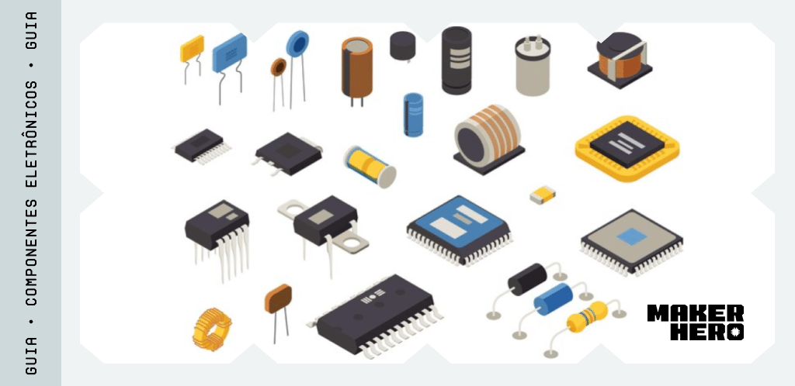
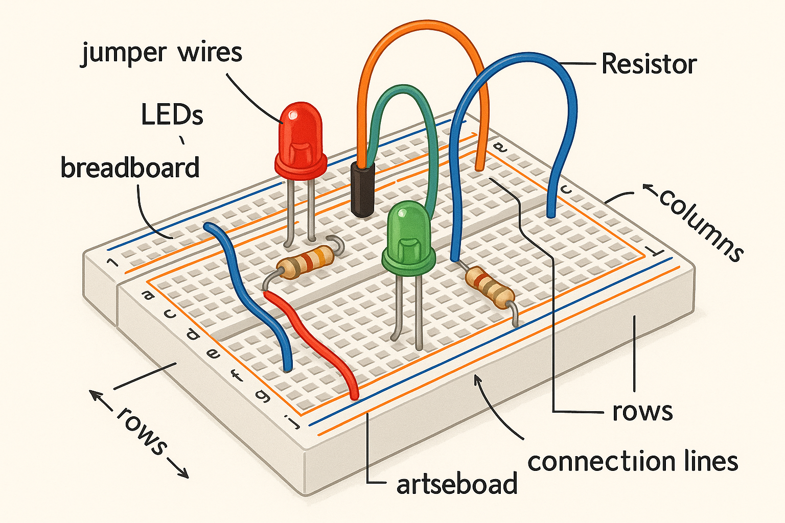
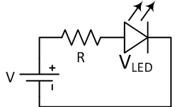
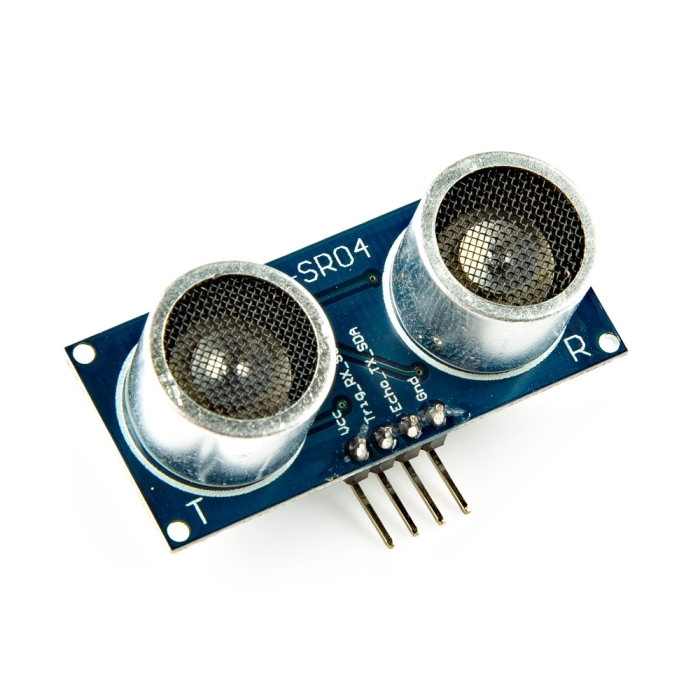
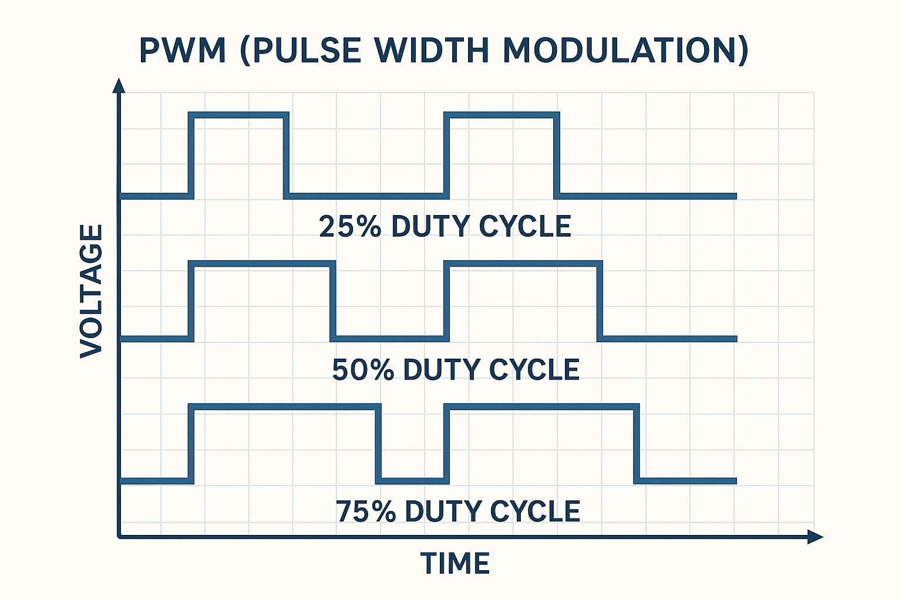
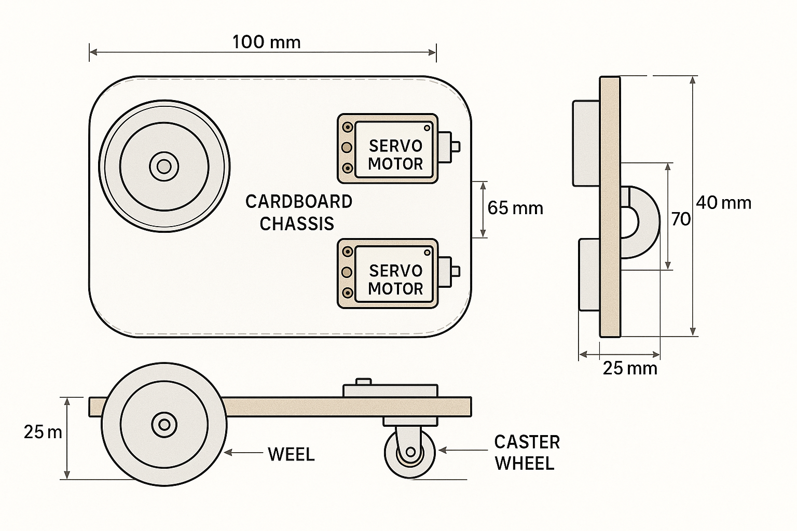
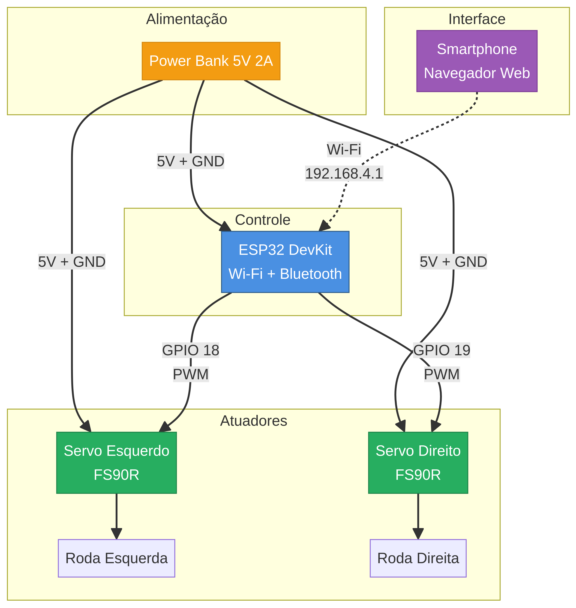

Currículo Detalhado
Eletrônica Básica
8 horas • 3 aulas
Módulo 1.1: Introdução à Robótica e Eletrônica Básica
O Que é um Robô?
Bem-vindo ao início da sua jornada no fascinante mundo da robótica! Um robô é, em sua essência, uma máquina programável capaz de realizar uma série de ações de forma autônoma ou semi-autônoma. A palavra "robô" foi popularizada pelo escritor tcheco Karel Čapek em sua peça de 1920, "R.U.R." (Rossum's Universal Robots), derivando da palavra tcheca robota, que significa "trabalho forçado".
Os robôs modernos são compostos por três pilares fundamentais:
- Mecânica: O corpo físico do robô, incluindo seu chassi, rodas, braços e garras.
- Eletrônica: O sistema nervoso do robô, composto por sensores, atuadores e a unidade de controle (o "cérebro").
- Programação: A inteligência do robô, o conjunto de instruções que define seu comportamento.
Neste curso, exploraremos todos os três pilares, começando com os blocos de construção da eletrônica.
 Figura 1: Diversos componentes eletrônicos que formam a base da robótica.---
Conceitos Fundamentais de Eletrônica
Para construir robôs, é crucial entender três conceitos básicos da eletricidade: Tensão, Corrente e Resistência.
| Conceito | Unidade | Analogia com Água |
|---|---|---|
| Tensão (V) | Volt (V) | A pressão da água em uma mangueira. É a "força" que impulsiona os elétrons. |
| Corrente (I) | Ampere (A) | O fluxo de água que passa pela mangueira. É a quantidade de elétrons em movimento. |
| Resistência (R) | Ohm (Ω) | Um estreitamento na mangueira que limita o fluxo de água. Controla a quantidade de corrente. |
A Lei de Ohm relaciona esses três conceitos: V = I * R. Esta é a lei mais fundamental da eletrônica e nos ajuda a calcular como os componentes se comportarão em um circuito.
---
Componentes Eletrônicos Essenciais
Vamos conhecer alguns dos componentes mais comuns que você usará.
Protoboard (Matriz de Contatos)
A protoboard é uma ferramenta que permite montar e testar circuitos eletrônicos sem a necessidade de solda. Suas conexões internas facilitam a prototipagem rápida.
 Figura 2: Diagrama de uma protoboard mostrando as conexões internas das fileiras e colunas.- Linhas de Alimentação: As colunas nas laterais (geralmente marcadas com
+e-) são conectadas verticalmente. São usadas para distribuir a tensão (VCC) e o terra (GND) por todo o circuito. - Área de Componentes: As fileiras na área central são conectadas horizontalmente. Cada fileira é um nó elétrico, permitindo conectar os terminais dos componentes.
LED (Diodo Emissor de Luz)
O LED é um componente que emite luz quando a corrente elétrica passa por ele. Ele é um diodo, o que significa que a corrente só pode fluir em uma direção. O terminal mais longo é o anodo (+) e o mais curto é o catodo (-).
Resistor
O resistor é um componente que limita a passagem de corrente. Ele é crucial para proteger componentes sensíveis, como os LEDs, de receberem corrente excessiva e queimarem. O valor de um resistor é medido em Ohms (Ω).
 Figura 3: Esquema de um circuito simples para acender um LED, mostrando a necessidade de um resistor para limitar a corrente.---
Projeto Prático: Acendendo seu Primeiro LED
Vamos aplicar o que aprendemos montando um circuito físico simples. Este projeto não requer programação, apenas uma fonte de energia.
Materiais Necessários:- 1x Protoboard
- 1x LED (qualquer cor)
- 1x Resistor de 220Ω a 330Ω
- Fios Jumper
- 1x Fonte de alimentação de 5V (pode ser um power bank ou a saída 5V de uma placa Arduino/ESP32)
- Conecte a Alimentação: Use fios jumper para conectar a saída de 5V da sua fonte à linha de alimentação positiva (
+) da protoboard e o GND à linha negativa (-). - Posicione o LED: Espete o LED na área central da protoboard, com cada terminal em uma fileira diferente.
- Conecte o Resistor: Conecte uma perna do resistor na mesma fileira do terminal anodo (+) do LED.
- Feche o Circuito:
- Use um fio para conectar a outra perna do resistor à linha de alimentação positiva (+).
- Use outro fio para conectar a fileira do terminal catodo (-) do LED à linha de alimentação negativa (-).
Ao ligar a fonte de alimentação, o LED deve acender! Se não acender, verifique as conexões, a polaridade do LED (anodo/catodo) e se a fonte está funcionando.
Parabéns! Você montou seu primeiro circuito eletrônico. No próximo módulo, aprenderemos a controlar componentes como este usando programação.
Introdução ao Arduino
8 horas • 4 aulas
_# Módulo 1.2: Introdução ao Arduino e Programação
O Que é Arduino?
No módulo anterior, montamos um circuito estático. Agora, vamos dar vida aos nossos projetos com o Arduino. O Arduino não é um único componente, mas uma plataforma de prototipagem eletrônica de código aberto que combina hardware e software para criar projetos interativos.
- Hardware: Uma placa de microcontrolador que pode ser programada para ler entradas (como a luz em um sensor) e transformá-las em saídas (como acender um LED ou mover um motor).
- Software: O Arduino IDE (Ambiente de Desenvolvimento Integrado), um programa de computador onde você escreve e envia o código para a placa.
Existem muitas placas na família Arduino, mas a mais icônica é o Arduino UNO. Para este curso, focaremos no ESP32, uma placa mais poderosa com Wi-Fi e Bluetooth integrados, mas que pode ser programada da mesma forma que um Arduino.
 Figura 1: Um ESP32 DevKit, uma placa poderosa e versátil que usaremos em nossos projetos.
Figura 1: Um ESP32 DevKit, uma placa poderosa e versátil que usaremos em nossos projetos.
---
Instalação do Arduino IDE e ESP32
Para programar o ESP32, usaremos o Arduino IDE. Siga estes passos para configurar seu ambiente:
- Baixe e Instale o Arduino IDE: Acesse o site oficial do [Arduino](https://www.arduino.cc/en/software) e baixe a versão mais recente para o seu sistema operacional.
- Adicione o Suporte ao ESP32:
- Abra o Arduino IDE, vá em Arquivo > Preferências.
- No campo "URLs de Gerenciadores de Placas Adicionais", cole o seguinte link:
https://raw.githubusercontent.com/espressif/arduino-esp32/gh-pages/package_esp32_index.json
- Instale as Placas ESP32:
- Vá em Ferramentas > Placa > Gerenciador de Placas.
- Pesquise por "esp32" e instale o pacote "esp32 by Espressif Systems".
- Selecione a Placa e a Porta:
- Conecte seu ESP32 ao computador via cabo USB.
- Em Ferramentas > Placa, navegue até "ESP32 Arduino" e selecione "ESP32 Dev Module".
- Em Ferramentas > Porta, selecione a porta serial correspondente ao seu ESP32 (ex: COM3 no Windows ou /dev/ttyUSB0 no Linux).
---
Estrutura Básica de um Programa Arduino
Todo programa (chamado de sketch) para Arduino possui duas funções principais:
void setup() {
// Código de configuração, executado uma vez quando a placa liga ou é resetada.
}
void loop() {
// Código principal, executado repetidamente em um loop infinito.
}
setup(): Usada para inicializar configurações, como definir se um pino será de entrada ou saída.loop(): Onde a lógica principal do robô acontece. Ele lê sensores, toma decisões e controla atuadores, repetidamente.
Variáveis e Tipos de Dados
Variáveis são "caixas" na memória onde guardamos informações. Cada variável tem um tipo:
int: para números inteiros (ex:int idade = 30;)float: para números com casas decimais (ex:float pi = 3.14;)bool: para valores verdadeiro ou falso (ex:bool ledAceso = true;)String: para texto (ex:String nome = "Robô";)
Entrada e Saída Digital
Os pinos de um microcontrolador podem ser configurados como entrada (para ler dados, como um botão) ou saída (para enviar sinais, como acender um LED).
pinMode(pino, MODO): Configura um pino comoINPUTouOUTPUT.digitalWrite(pino, VALOR): Escreve um valorHIGH(ligado, 5V/3.3V) ouLOW(desligado, 0V) em um pino de saída.digitalRead(pino): Lê o valor de um pino de entrada, que seráHIGHouLOW.
---
Projeto Prático: Semáforo com LEDs
Vamos criar um semáforo simples com três LEDs (vermelho, amarelo e verde) que acendem em sequência.
Materiais Necessários:- 1x ESP32 DevKit
- 1x Protoboard
- 3x LEDs (1 vermelho, 1 amarelo, 1 verde)
- 3x Resistores de 220Ω
- Fios Jumper
- Conecte o pino
GNDdo ESP32 à linha de alimentação negativa (-) da protoboard. - Conecte os LEDs na protoboard, cada um com seu resistor em série no terminal anodo (+).
- Conecte o catodo (-) de todos os LEDs à linha negativa (
-) da protoboard. - Conecte os resistores dos LEDs aos pinos do ESP32:
- LED Verde: GPIO 25
- LED Amarelo: GPIO 26
- LED Vermelho: GPIO 27
Código do Projeto:Copie e cole este código no seu Arduino IDE, e clique no botão "Carregar" (seta para a direita).
// Define os pinos para cada LED
const int pinoLedVerde = 25;
const int pinoLedAmarelo = 26;
const int pinoLedVermelho = 27;
void setup() {
// Configura todos os pinos dos LEDs como saída
pinMode(pinoLedVerde, OUTPUT);
pinMode(pinoLedAmarelo, OUTPUT);
pinMode(pinoLedVermelho, OUTPUT);
}
void loop() {
// Sequência do semáforo
// 1. Verde aceso por 5 segundos
digitalWrite(pinoLedVerde, HIGH);
delay(5000); // Espera 5000 milissegundos (5 segundos)
digitalWrite(pinoLedVerde, LOW);
// 2. Amarelo aceso por 2 segundos
digitalWrite(pinoLedAmarelo, HIGH);
delay(2000);
digitalWrite(pinoLedAmarelo, LOW);
// 3. Vermelho aceso por 5 segundos
digitalWrite(pinoLedVermelho, HIGH);
delay(5000);
digitalWrite(pinoLedVermelho, LOW);
}
Após carregar o código, seu circuito se comportará como um semáforo, alternando entre os LEDs verde, amarelo e vermelho. A função delay() pausa o programa, permitindo que cada luz fique acesa por um tempo.
Você acaba de dar o primeiro passo na programação de hardware! No próximo módulo, aprenderemos a interagir com o mundo exterior usando sensores.
Sensores Básicos
8 horas • 5 aulas
_# Módulo 1.3: Sensores Básicos
O Que São Sensores?
Se os atuadores são as "mãos" de um robô, os sensores são seus "sentidos". Sensores são componentes eletrônicos que permitem a um robô perceber o ambiente ao seu redor. Eles convertem uma propriedade física (como luz, distância ou temperatura) em um sinal elétrico que o microcontrolador pode ler e interpretar.
Neste módulo, vamos explorar um dos sensores mais populares e úteis para robôs iniciantes: o sensor de distância ultrassônico.
---
Sensor de Distância Ultrassônico (HC-SR04)
O HC-SR04 é um sensor que mede distâncias usando ondas sonoras de alta frequência (ultrassom), de forma semelhante a como um morcego ou um sonar de submarino funciona.
 Figura 1: O sensor ultrassônico HC-SR04, com seus dois transdutores (emissor e receptor). Como Funciona:- O pino Trig (Trigger/Gatilho) recebe um pulso do microcontrolador.
- Em resposta, o sensor emite um breve pulso de som ultrassônico.
- O som viaja, bate em um objeto e retorna como um eco.
- O pino Echo (Eco) detecta o eco e envia um sinal de volta ao microcontrolador. A duração desse sinal é proporcional ao tempo que o som levou para ir e voltar.
Conhecendo a velocidade do som no ar (aproximadamente 343 metros por segundo), podemos calcular a distância até o objeto.
Pinos do HC-SR04
 Figura 2: Diagrama de pinagem do sensor HC-SR04.
Figura 2: Diagrama de pinagem do sensor HC-SR04.
- VCC: Alimentação de 5V.
- Trig: Pino de entrada do gatilho.
- Echo: Pino de saída do eco.
- GND: Terra (0V).
---
Projeto Prático: Sistema de Alarme de Distância
Vamos construir um "alarme de ré" que acende um LED e emite um som (usando o LED da própria placa) quando um objeto se aproxima demais do sensor.
Materiais Necessários:- 1x ESP32 DevKit
- 1x Sensor Ultrassônico HC-SR04
- 1x Protoboard
- 1x Resistor de 1kΩ
- 1x Resistor de 2kΩ
- Fios Jumper
- Conecte os pinos
VCCeGNDdo sensor às saídas5VeGNDdo ESP32, respectivamente. - Conecte o pino
Trigdo sensor ao GPIO 12 do ESP32. - Crie o Divisor de Tensão:
- Conecte o pino Echo do sensor a um ponto na protoboard.
- Nesse mesmo ponto, conecte o resistor de 1kΩ.
- Conecte a outra ponta do resistor de 1kΩ ao GPIO 13 do ESP32.
- No pino GPIO 13, conecte também o resistor de 2kΩ. A outra ponta do resistor de 2kΩ deve ser conectada ao GND.
// Define os pinos para o sensor ultrassônico
const int pinoTrig = 12;
const int pinoEcho = 13;
// Define o pino do LED embutido na placa (geralmente é o 2)
const int ledEmbutido = 2;
// Variáveis para armazenar a duração do pulso e a distância
long duracao;
int distanciaCm;
void setup() {
Serial.begin(115200); // Inicia a comunicação serial para vermos os resultados
pinMode(pinoTrig, OUTPUT);
pinMode(pinoEcho, INPUT);
pinMode(ledEmbutido, OUTPUT);
}
void loop() {
// Limpa o pino Trig
digitalWrite(pinoTrig, LOW);
delayMicroseconds(2);
// Envia um pulso de 10 microssegundos no pino Trig
digitalWrite(pinoTrig, HIGH);
delayMicroseconds(10);
digitalWrite(pinoTrig, LOW);
// Lê o tempo de retorno do pulso no pino Echo
duracao = pulseIn(pinoEcho, HIGH);
// Calcula a distância em centímetros
// Velocidade do som (343 m/s) = 0.0343 cm/µs
// A distância é o tempo / 2 (ida e volta) * velocidade
distanciaCm = duracao * 0.0343 / 2;
// Imprime a distância no Monitor Serial
Serial.print("Distância: ");
Serial.print(distanciaCm);
Serial.println(" cm");
// Lógica do alarme
if (distanciaCm < 10) {
// Se o objeto estiver a menos de 10 cm, acende o LED
digitalWrite(ledEmbutido, HIGH);
} else {
// Caso contrário, apaga o LED
digitalWrite(ledEmbutido, LOW);
}
delay(100); // Pequena pausa antes da próxima leitura
}
Abra o Monitor Serial (Ferramentas > Monitor Serial) com a velocidade de 115200. Você verá as leituras de distância sendo impressas. Aproxime sua mão do sensor. Quando a distância for menor que 10 cm, o LED azul embutido na sua placa ESP32 deverá acender.
Você acabou de dar "olhos" ao seu projeto! No próximo módulo, vamos aprender a fazer nosso robô se mover usando servomotores.
Motores e Atuadores
8 horas • 4 aulas
_# Módulo 1.4: Atuadores - Servomotores
O Que São Atuadores?
Atuadores são os componentes que permitem a um robô interagir fisicamente com o mundo. Eles convertem energia (geralmente elétrica) em movimento. Enquanto os sensores coletam informações, os atuadores executam as ações. Os motores são o tipo mais comum de atuador em robótica móvel.Neste módulo, focaremos nos servomotores, que são essenciais para a robótica de precisão.
---
Tipos de Servomotores
Um servomotor (ou simplesmente "servo") é um motor especial que permite o controle preciso de sua posição angular ou velocidade. Existem dois tipos principais que usaremos:
1. Servo Padrão (ex: SG90)
Este servo é projetado para girar para uma posição específica dentro de um alcance limitado, geralmente de 0 a 180 graus. Ele é ideal para aplicações que exigem controle de ângulo, como:
- Braços robóticos
- Timões de direção
- Pernas de robôs
- Controle de câmeras (pan/tilt)
2. Servo de Rotação Contínua (ex: FS90R)
Visualmente idêntico ao servo padrão, este tipo é modificado para girar continuamente em 360 graus, sem um limite de posição. Em vez de controlar o ângulo, controlamos a velocidade e a direção da rotação. É a escolha perfeita para as rodas de um robô móvel.
 Figura 1: O servo de rotação contínua FS90R, ideal para as rodas do nosso robô.
Figura 1: O servo de rotação contínua FS90R, ideal para as rodas do nosso robô.
---
Como Controlar um Servo: PWM
Servos são controlados por um sinal de PWM (Pulse Width Modulation), ou Modulação por Largura de Pulso. Em vez de um sinal digital simples (ligado/desligado), o PWM é um pulso que se repete em uma frequência constante (geralmente 50 Hz para servos), mas cuja largura (duração) pode ser variada.
 Figura 2: Um sinal PWM com diferentes larguras de pulso (duty cycles). É essa largura que o servo interpreta.- Para Servos Padrão (SG90):
- Um pulso de ~1000 µs (microssegundos) corresponde a 0 graus.
- Um pulso de ~1500 µs corresponde a 90 graus (centro).
- Um pulso de ~2000 µs corresponde a 180 graus.
- Para Servos de Rotação Contínua (FS90R):
- Um pulso de ~1300 µs corresponde à velocidade máxima em um sentido (ex: anti-horário).
- Um pulso de ~1500 µs corresponde a parado.
- Um pulso de ~1700 µs corresponde à velocidade máxima no outro sentido (ex: horário).
O ESP32 possui hardware dedicado (LEDC) para gerar sinais PWM precisos, o que o torna excelente para controlar múltiplos servos.
 Figura 3: A pinagem típica de um servo, com fios para alimentação (VCC), terra (GND) e sinal (PWM).
Figura 3: A pinagem típica de um servo, com fios para alimentação (VCC), terra (GND) e sinal (PWM).
---
Projeto Prático: Controlando um Servo de Rotação Contínua
Vamos testar um servo FS90R, fazendo-o girar para frente, para trás e parar, usando a biblioteca ESP32Servo.
- 1x ESP32 DevKit
- 1x Servo de Rotação Contínua FS90R
- 1x Protoboard
- Fios Jumper
- Fonte de alimentação externa de 5V (um power bank é ideal, pois o USB do computador pode não fornecer corrente suficiente)
- GND Comum: Conecte o
GNDda sua fonte de 5V, oGNDdo ESP32 e o fio marrom/preto do servo todos juntos na linha negativa (-) da protoboard. Este é o passo mais importante. - Alimentação do Servo: Conecte o fio vermelho do servo à saída de
5Vda sua fonte externa. - Alimentação do ESP32: Conecte o pino
5Vdo ESP32 à saída de5Vda fonte externa. - Sinal de Controle: Conecte o fio de sinal amarelo/laranja do servo ao GPIO 18 do ESP32.
Primeiro, instale a biblioteca ESP32Servo: vá em Ferramentas > Gerenciar Bibliotecas, procure por "ESP32Servo" e instale-a.
#include <ESP32Servo.h>
// Cria um objeto Servo
Servo meuServo;
// Define o pino onde o servo está conectado
const int pinoServo = 18;
void setup() {
// Associa o objeto Servo ao pino e define os parâmetros de PWM
// (500 µs = pulso mínimo, 2500 µs = pulso máximo)
meuServo.attach(pinoServo, 500, 2500);
}
void loop() {
Serial.println("Girando para frente (velocidade máxima)");
meuServo.writeMicroseconds(1300); // Valor para girar em um sentido
delay(3000); // Gira por 3 segundos
Serial.println("Parando");
meuServo.writeMicroseconds(1500); // Valor para parar
delay(3000); // Fica parado por 3 segundos
Serial.println("Girando para trás (velocidade máxima)");
meuServo.writeMicroseconds(1700); // Valor para girar no outro sentido
delay(3000); // Gira por 3 segundos
Serial.println("Parando");
meuServo.writeMicroseconds(1500); // Valor para parar
delay(3000); // Fica parado por 3 segundos
}
O valor exato para parar um servo de rotação contínua pode variar ligeiramente (ex: 1480, 1510). Se o seu servo não parar completamente com 1500, ajuste este valor no código até encontrar o ponto de repouso perfeito.
O servo irá girar em um sentido por 3 segundos, parar por 3 segundos, girar no sentido oposto por 3 segundos e parar novamente, repetindo o ciclo. Você agora tem o conhecimento para dar movimento ao seu robô!
No próximo módulo, vamos juntar tudo o que aprendemos para construir nosso primeiro robô completo: o Rover de Papel!
Display e Interface
6 horas • 3 aulas
Módulo 1.5: Projeto Final Nível 1 - Robô Rover de Papel
Chegou a Hora de Construir!
Parabéns por chegar ao projeto final do Nível 1! Neste módulo, vamos integrar tudo o que aprendemos sobre eletrônica, programação e atuadores para construir nosso primeiro robô funcional: um Rover de Papel controlado por Wi-Fi.
Este projeto é fantástico para iniciantes porque utiliza materiais simples e acessíveis (como papelão) para o chassi, combinado com a potência do ESP32 para criar uma interface de controle web que funciona em qualquer smartphone. Vamos colocar a mão na massa!
 Figura 1: Exemplo de um robô rover similar ao que vamos construir, controlado por um aplicativo web.
Figura 1: Exemplo de um robô rover similar ao que vamos construir, controlado por um aplicativo web.
---
1. Materiais Necessários
| Quantidade | Componente | Descrição | Módulo Relacionado |
|---|---|---|---|
| 1x | ESP32 DevKit | O cérebro do nosso robô. | 1.2 |
| 2x | Servo de Rotação Contínua FS90R | Os motores que moverão as rodas. | 1.4 |
| 2x | Rodas para Servo | Podem ser compradas ou feitas de papelão. | 1.4 |
| 1x | Rodízio ou Roda Boba | Para dar um terceiro ponto de apoio. | 1.1 |
| 1x | Power Bank 5V (≥ 2A) | Fonte de alimentação para o robô. | 1.1 |
| 1x | Protoboard Mini | Para organizar as conexões. | 1.1 |
| - | Fios Jumper Macho-Fêmea | Para conectar os componentes. | 1.1 |
| - | Papelão ou Cartolina Rígida | Para construir o chassi. | - |
| - | Ferramentas | Fita dupla-face, cola quente, tesoura, régua. | - |
---
2. Montagem Mecânica: O Chassi
Vamos criar o corpo do nosso robô. A simplicidade é a chave aqui.
 Figura 2: Um gabarito técnico para o design do chassi, mostrando a posição dos servos e rodas.- Corte o Chassi: Desenhe e corte um retângulo de papelão com aproximadamente 15 cm de comprimento por 9 cm de largura.
- Fixe os Servos: Prenda os dois servos FS90R nas laterais do chassi, um de cada lado. Os eixos dos servos devem ficar para fora. Você pode usar fita dupla-face forte ou cola quente.
- Prepare as Rodas: Se você não tiver rodas prontas, corte dois discos de papelão com cerca de 6-7 cm de diâmetro. Cole duas camadas de papelão para maior rigidez. Em seguida, parafuse o horn (acessório plástico) do servo no centro da roda.
- Encaixe as Rodas: Encaixe as rodas nos eixos dos servos.
- Adicione o Rodízio: Cole o rodízio na parte traseira e central do chassi. Isso servirá como o terceiro ponto de apoio, permitindo que o robô gire facilmente.
---
3. Ligações Elétricas: O Sistema Nervoso
Agora, vamos conectar os componentes eletrônicos. Preste muita atenção ao GND comum, que é essencial para o funcionamento do circuito.
 Figura 3: A arquitetura do nosso robô, mostrando como a energia e os sinais fluem entre os componentes.- Distribua a Alimentação: Conecte a saída do Power Bank a uma protoboard mini. Isso facilitará a distribuição de 5V e GND.
- Alimente o ESP32: Conecte o pino 5V do ESP32 na linha positiva da protoboard e o pino GND na linha negativa.
- Alimente os Servos: Conecte os fios vermelhos de AMBOS os servos na linha positiva (5V) e os fios marrons/pretos na linha negativa (GND).
- Conecte os Sinais dos Servos:
- Conecte o fio de sinal (amarelo/laranja) do servo esquerdo ao GPIO 18 do ESP32.
- Conecte o fio de sinal do servo direito ao GPIO 19 do ESP32.
 Figura 4: Exemplo de ligação de um servo. Lembre-se de que o GND deve ser comum a todos os componentes.
Figura 4: Exemplo de ligação de um servo. Lembre-se de que o GND deve ser comum a todos os componentes.
---
4. Programação: A Inteligência do Robô
Este código transformará seu ESP32 em um ponto de acesso Wi-Fi (Access Point). Ao se conectar a ele com seu celular, você poderá acessar uma página web com botões para controlar o robô.
Copie o código abaixo, cole no seu Arduino IDE e carregue-o para o ESP32.
#include <WiFi.h>
#include <ESP32Servo.h>
// ===== Configuração do Wi-Fi AP =====
const char* ssid = "ROBO_PAPEL";
const char* password = "12345678";
WiFiServer server(80);
// ===== Configuração dos Servos =====
Servo servoEsquerdo;
Servo servoDireito;
const int pinoServoEsquerdo = 18;
const int pinoServoDireito = 19;
// ===== Calibração e Velocidade =====
// Ajuste estes valores se os servos não pararem completamente
int paradoEsquerdo = 1500;
int paradoDireito = 1500;
int velocidade = 200; // Quão rápido o robô se move (100-400)
// ===== Funções de Movimento =====
void parar() {
servoEsquerdo.writeMicroseconds(paradoEsquerdo);
servoDireito.writeMicroseconds(paradoDireito);
}
void frente() {
servoEsquerdo.writeMicroseconds(paradoEsquerdo + velocidade);
servoDireito.writeMicroseconds(paradoDireito - velocidade);
}
void tras() {
servoEsquerdo.writeMicroseconds(paradoEsquerdo - velocidade);
servoDireito.writeMicroseconds(paradoDireito + velocidade);
}
void esquerda() {
servoEsquerdo.writeMicroseconds(paradoEsquerdo - velocidade);
servoDireito.writeMicroseconds(paradoDireito - velocidade);
}
void direita() {
servoEsquerdo.writeMicroseconds(paradoEsquerdo + velocidade);
servoDireito.writeMicroseconds(paradoDireito + velocidade);
}
// ===== Página HTML de Controle =====
String html = "<!DOCTYPE html><html><head><meta name=\"viewport\" content=\"width=device-width, initial-scale=1\"><style>" \
"body{text-align:center; font-family:sans-serif;} button{font-size:24px; padding:20px; margin:10px;}" \
".dir{display:flex; justify-content:center;} #stop{background-color:red; color:white;}" \
"</style></head><body><h1>Controle do Robô</h1>" \
"<div class=\"dir\"><button onmousedown=\"fetch(\"/frente\")\" ontouchstart=\"fetch(\"/frente\")\">▲</button></div>" \
"<div class=\"dir\"><button onmousedown=\"fetch(\"/esquerda\")\" ontouchstart=\"fetch(\"/esquerda\")\">◄</button>" \
"<button id=\"stop\" onmousedown=\"fetch(\"/parar\")\" ontouchstart=\"fetch(\"/parar\")\">■</button>" \
"<button onmousedown=\"fetch(\"/direita\")\" ontouchstart=\"fetch(\"/direita\")\">►</button></div>" \
"<div class=\"dir\"><button onmousedown=\"fetch(\"/tras\")\" ontouchstart=\"fetch(\"/tras\")\">▼</button></div>" \
"</body></html>";
void setup() {
servoEsquerdo.attach(pinoServoEsquerdo);
servoDireito.attach(pinoServoDireito);
parar();
WiFi.softAP(ssid, password);
server.begin();
}
void loop() {
WiFiClient client = server.available();
if (client) {
String req = client.readStringUntil(\'\r\');
if (req.indexOf("/frente") != -1) frente();
else if (req.indexOf("/tras") != -1) tras();
else if (req.indexOf("/esquerda") != -1) esquerda();
else if (req.indexOf("/direita") != -1) direita();
else if (req.indexOf("/parar") != -1) parar();
client.print(html);
delay(1);
}
}
---
5. Teste e Calibração
- Ligue o Robô: Conecte o Power Bank.
- Conecte-se ao Wi-Fi: No seu celular, procure a rede Wi-Fi chamada
ROBO_PAPELe conecte-se a ela usando a senha12345678. - Acesse a Página de Controle: Abra o navegador do seu celular e digite o endereço
192.168.4.1. - Controle o Robô: A página com os botões de controle deve aparecer. Teste cada um dos botões.
paradoEsquerdo e paradoDireito no código. Aumente ou diminua os valores em pequenos incrementos (ex: de 1500 para 1505, ou 1495) até que as rodas fiquem perfeitamente imóveis ao pressionar o botão de parar.
---
Próximos Passos e Upgrades
Você construiu seu primeiro robô! Agora, as possibilidades são infinitas. Aqui estão algumas ideias para evoluir seu projeto, que serão a base para o Nível 2 do nosso curso:
- Adicione Sensores: Integre o sensor ultrassônico (HC-SR04) do Módulo 1.3 para criar um modo autônomo que evita obstáculos.
- Melhore o Chassi: Projete e imprima em 3D um chassi mais robusto e personalizado.
- Gestão de Energia: Troque o power bank por uma bateria de Li-Ion com um circuito de gerenciamento para um robô mais compacto.
- Sensores de Linha: Adicione sensores de infravermelho para que o robô possa seguir uma linha preta no chão.
Comunicação Serial
6 horas • 3 aulas
O Que é Comunicação Serial?
Até agora, nossos robôs funcionavam de forma independente, sem nos informar o que estava acontecendo "dentro" deles. A comunicação serial é a ponte que permite que microcontroladores como o ESP32 conversem com computadores, outros dispositivos eletrônicos e até mesmo entre si.
A palavra "serial" significa que os dados são enviados um bit por vez, em sequência, através de um ou mais fios. Isso contrasta com a comunicação "paralela", onde múltiplos bits são enviados simultaneamente através de múltiplos fios.
Imagine a comunicação serial como um túnel estreito onde os carros (bits de dados) passam um de cada vez, enquanto a comunicação paralela seria como uma rodovia de várias pistas onde os carros podem passar lado a lado.
---
Por Que a Comunicação Serial é Importante em Robótica?
A comunicação serial é fundamental para:
- Depuração: Ver o que o robô está "pensando" através do Serial Monitor
- Telemetria: Enviar dados de sensores para um computador para análise
- Controle Remoto: Receber comandos de um computador ou smartphone
- Data Logging: Armazenar dados de sensores em um cartão SD
- Comunicação entre Dispositivos: Conectar múltiplos microcontroladores ou sensores inteligentes
---
Módulo 6.1: UART e o Serial Monitor
O Que é UART?
UART (Universal Asynchronous Receiver-Transmitter) é o protocolo de comunicação serial mais básico e amplamente usado. "Asynchronous" significa que não há um sinal de clock compartilhado entre os dispositivos - eles devem concordar previamente sobre a velocidade de transmissão.
Componentes da Comunicação UART
Uma comunicação UART usa, no mínimo, três fios:
| Fio | Nome | Função |
|---|---|---|
| TX | Transmit (Transmitir) | Envia dados do dispositivo |
| RX | Receive (Receber) | Recebe dados para o dispositivo |
| GND | Ground (Terra) | Referência comum de tensão |
Regra de Ouro: O TX de um dispositivo deve ser conectado ao RX do outro, e vice-versa. Pense nisso como uma conversa: quando você fala (TX), a outra pessoa escuta (RX).
Baud Rate (Taxa de Transmissão)
O Baud Rate é a velocidade de comunicação, medida em bits por segundo (bps). Ambos os dispositivos devem usar o mesmo Baud Rate. Os valores mais comuns são:
- 9600 bps (padrão, confiável)
- 115200 bps (mais rápido, usado em projetos avançados)
Usando o Serial Monitor
O Arduino IDE possui uma ferramenta chamada Serial Monitor que permite visualizar e enviar dados pela porta serial USB. Ela é acessada através do ícone de lupa no canto superior direito ou pelo atalho Ctrl+Shift+M.
---
Projeto Prático 1: Hello World Serial
Vamos começar com o exemplo mais básico: fazer o ESP32 enviar uma mensagem para o computador.
Código:void setup() {
// Inicializa a comunicação serial a 115200 bps
Serial.begin(115200);
// Aguarda a conexão serial (útil para algumas placas)
delay(1000);
Serial.println("=================================");
Serial.println(" Bem-vindo ao ESP32! ");
Serial.println(" Sistema Iniciado com Sucesso ");
Serial.println("=================================");
}
void loop() {
Serial.print("Tempo desde o início (ms): ");
Serial.println(millis()); // millis() retorna o tempo desde que a placa ligou
delay(1000); // Aguarda 1 segundo entre as mensagens
}
- Carregue o código no ESP32
- Abra o Serial Monitor (
Ferramentas > Monitor Serial) - Certifique-se de que o Baud Rate no canto inferior direito está configurado para 115200
- Você verá a mensagem de boas-vindas seguida de atualizações a cada segundo
print() e println():
Serial.print(): Imprime o texto na mesma linhaSerial.println(): Imprime o texto e pula para a próxima linha (adiciona\n)
---
Projeto Prático 2: Controle por Comandos Seriais
Agora vamos fazer o inverso: enviar comandos do computador para o ESP32 controlar um LED.
Materiais:- 1x ESP32
- 1x LED
- 1x Resistor 220Ω
- Protoboard e jumpers
- Conecte o LED ao GPIO 25 através do resistor
- Catodo do LED ao GND
const int pinoLED = 25;
void setup() {
Serial.begin(115200);
pinMode(pinoLED, OUTPUT);
Serial.println("\n=== Sistema de Controle por Serial ===");
Serial.println("Comandos disponíveis:");
Serial.println(" ON - Liga o LED");
Serial.println(" OFF - Desliga o LED");
Serial.println(" STATUS - Mostra o estado atual");
Serial.println("=====================================\n");
}
void loop() {
// Verifica se há dados disponíveis para leitura
if (Serial.available() > 0) {
// Lê a string enviada até encontrar '\n'
String comando = Serial.readStringUntil('\n');
// Remove espaços em branco no início e fim
comando.trim();
// Converte para maiúsculas para facilitar a comparação
comando.toUpperCase();
// Processa o comando
if (comando == "ON") {
digitalWrite(pinoLED, HIGH);
Serial.println("✓ LED ligado!");
}
else if (comando == "OFF") {
digitalWrite(pinoLED, LOW);
Serial.println("✓ LED desligado!");
}
else if (comando == "STATUS") {
if (digitalRead(pinoLED) == HIGH) {
Serial.println("Estado: LED está LIGADO");
} else {
Serial.println("Estado: LED está DESLIGADO");
}
}
else {
Serial.println("✗ Comando não reconhecido: " + comando);
Serial.println("Use: ON, OFF ou STATUS");
}
}
}
- Carregue o código e abra o Serial Monitor
- No campo de entrada do Serial Monitor, digite
ONe pressione Enter - O LED deve acender e você verá a confirmação
- Experimente os comandos
OFFeSTATUS
Serial.available(): Retorna o número de bytes disponíveis para leituraSerial.readStringUntil('\n'): Lê caracteres até encontrar uma nova linhaString.trim(): Remove espaços em brancoString.toUpperCase(): Converte para maiúsculas
---
Módulo 6.2: Protocolo I2C
O Que é I2C?
I2C (Inter-Integrated Circuit), pronunciado "I-squared-C" ou "I-two-C", é um protocolo de comunicação que permite conectar múltiplos dispositivos usando apenas dois fios para dados.
Como o I2C Funciona?
O I2C usa um sistema de mestre-escravo (master-slave):
- Mestre (Master): Geralmente o microcontrolador (ESP32), que inicia e controla a comunicação
- Escravo (Slave): Sensores, displays ou outros dispositivos que respondem às solicitações do mestre
| Fio | Nome Completo | Função |
|---|---|---|
| SDA | Serial Data | Linha de dados bidirecional |
| SCL | Serial Clock | Linha de clock gerada pelo mestre |
| GND | Ground | Terra comum |
| VCC | Power | Alimentação (3.3V ou 5V) |
Endereçamento I2C
Cada dispositivo I2C tem um endereço único (geralmente de 7 bits), permitindo que o mestre especifique com qual dispositivo deseja falar. É como um sistema de apartamentos: você precisa saber o número do apartamento para tocar a campainha certa.
Pinos I2C no ESP32:- SDA: GPIO 21
- SCL: GPIO 22
---
Projeto Prático 3: Scanner I2C
Antes de usar um dispositivo I2C, é útil descobrir seu endereço. Vamos criar um scanner que detecta todos os dispositivos I2C conectados.
Código:#include <Wire.h>
void setup() {
Serial.begin(115200);
Wire.begin(21, 22); // SDA = GPIO 21, SCL = GPIO 22
Serial.println("\n=== Scanner I2C ===");
Serial.println("Procurando dispositivos I2C...\n");
}
void loop() {
byte erro, endereco;
int dispositivosEncontrados = 0;
Serial.println("Escaneando...");
// Testa endereços de 1 a 127
for(endereco = 1; endereco < 127; endereco++) {
Wire.beginTransmission(endereco);
erro = Wire.endTransmission();
if (erro == 0) {
Serial.print("Dispositivo I2C encontrado no endereço 0x");
if (endereco < 16) Serial.print("0");
Serial.print(endereco, HEX);
Serial.println("!");
dispositivosEncontrados++;
}
else if (erro == 4) {
Serial.print("Erro desconhecido no endereço 0x");
if (endereco < 16) Serial.print("0");
Serial.println(endereco, HEX);
}
}
if (dispositivosEncontrados == 0) {
Serial.println("Nenhum dispositivo I2C encontrado.");
Serial.println("Verifique as conexões!");
}
else {
Serial.print("\nTotal: ");
Serial.print(dispositivosEncontrados);
Serial.println(" dispositivo(s) encontrado(s).\n");
}
delay(5000); // Aguarda 5 segundos antes de escanear novamente
}
- Conecte um dispositivo I2C ao ESP32 (como um display OLED ou sensor)
- Carregue o código
- Abra o Serial Monitor
- O scanner mostrará os endereços encontrados em formato hexadecimal (ex: 0x3C)
---
Projeto Prático 4: Display OLED I2C
Vamos usar o que aprendemos para controlar um display OLED usando I2C.
Materiais:- 1x ESP32
- 1x Display OLED 0.96" I2C (128x64 pixels, geralmente endereço 0x3C)
- Fios jumper
- OLED VCC → ESP32 3.3V
- OLED GND → ESP32 GND
- OLED SDA → GPIO 21
- OLED SCL → GPIO 22
- Vá em
Ferramentas > Gerenciar Bibliotecas - Procure por "Adafruit SSD1306"
- Instale a biblioteca "Adafruit SSD1306 by Adafruit"
- Instale também a dependência "Adafruit GFX Library"
#include <Wire.h>
#include <Adafruit_GFX.h>
#include <Adafruit_SSD1306.h>
// Configuração do display
#define SCREEN_WIDTH 128
#define SCREEN_HEIGHT 64
#define OLED_RESET -1 // Reset pin (ou -1 se compartilhado com ESP32)
#define SCREEN_ADDRESS 0x3C
Adafruit_SSD1306 display(SCREEN_WIDTH, SCREEN_HEIGHT, &Wire, OLED_RESET);
void setup() {
Serial.begin(115200);
// Inicializa o display
if(!display.begin(SSD1306_SWITCHCAPVCC, SCREEN_ADDRESS)) {
Serial.println("Falha ao inicializar o display OLED!");
while(1); // Para o programa
}
// Limpa o buffer
display.clearDisplay();
// Configurações de texto
display.setTextSize(2);
display.setTextColor(SSD1306_WHITE);
display.setCursor(0, 0);
// Escreve no display
display.println("Robo");
display.println("Expert");
display.setTextSize(1);
display.println("");
display.println("I2C Funcionando!");
// Envia o buffer para o display
display.display();
}
void loop() {
// Exibe um contador
static int contador = 0;
display.clearDisplay();
display.setTextSize(1);
display.setCursor(0, 0);
display.println("Sistema Ativo");
display.println("");
display.setTextSize(2);
display.print("Count: ");
display.println(contador);
display.display();
contador++;
delay(1000);
}
O display OLED mostrará o texto "Robo Expert" e um contador que aumenta a cada segundo. Você acabou de dominar a comunicação I2C!
---
Módulo 6.3: Protocolo SPI
O Que é SPI?
SPI (Serial Peripheral Interface) é um protocolo de comunicação serial síncrono de alta velocidade. Ele é mais rápido que o I2C, mas requer mais fios.
Como o SPI Funciona?
O SPI também usa um sistema mestre-escravo, mas com mais linhas de comunicação:
| Fio | Nome Completo | Função |
|---|---|---|
| MOSI | Master Out Slave In | Dados do mestre para o escravo |
| MISO | Master In Slave Out | Dados do escravo para o mestre |
| SCK | Serial Clock | Clock gerado pelo mestre |
| CS/SS | Chip Select / Slave Select | Seleciona qual escravo está ativo |
- MOSI: GPIO 23
- MISO: GPIO 19
- SCK: GPIO 18
- CS: Qualquer GPIO digital (você escolhe)
SPI vs I2C: Quando Usar Cada Um?
| Característica | I2C | SPI |
|---|---|---|
| Velocidade | Até 400 kHz (padrão) | Até 80 MHz no ESP32 |
| Fios Necessários | 2 (SDA, SCL) | 4+ (MOSI, MISO, SCK, CS) |
| Dispositivos | Muitos no mesmo barramento | 1 CS por dispositivo |
| Melhor Para | Sensores, displays simples | Cartões SD, displays TFT, módulos RF |
---
Projeto Prático 5: Data Logger com Cartão SD (SPI)
Vamos criar um sistema que grava dados de sensores em um arquivo de texto no cartão SD.
Materiais:- 1x ESP32
- 1x Módulo Leitor de Cartão SD
- 1x Cartão microSD (formatado em FAT32)
- 1x Sensor de temperatura DHT22 (opcional, usaremos dados simulados)
- SD VCC → ESP32 5V
- SD GND → ESP32 GND
- SD MISO → GPIO 19
- SD MOSI → GPIO 23
- SD SCK → GPIO 18
- SD CS → GPIO 5
#include <SPI.h>
#include <SD.h>
// Pino CS do módulo SD
const int CS_PIN = 5;
File arquivoDados;
void setup() {
Serial.begin(115200);
Serial.println("=== Sistema de Data Logger ===");
// Inicializa o cartão SD
if (!SD.begin(CS_PIN)) {
Serial.println("ERRO: Falha ao inicializar o cartão SD!");
Serial.println("Verifique se o cartão está inserido.");
while (1);
}
Serial.println("✓ Cartão SD inicializado com sucesso!");
// Verifica o tipo do cartão
uint8_t tipoCartao = SD.cardType();
if (tipoCartao == CARD_NONE) {
Serial.println("Nenhum cartão SD detectado!");
return;
}
Serial.print("Tipo do Cartão: ");
if (tipoCartao == CARD_MMC) Serial.println("MMC");
else if (tipoCartao == CARD_SD) Serial.println("SD");
else if (tipoCartao == CARD_SDHC) Serial.println("SDHC");
// Mostra o tamanho do cartão
uint64_t tamanhoCartao = SD.cardSize() / (1024 * 1024);
Serial.print("Tamanho do Cartão: ");
Serial.print(tamanhoCartao);
Serial.println(" MB");
Serial.println("\nIniciando gravação de dados...\n");
}
void loop() {
// Simula leituras de sensores
float temperatura = 20.0 + random(-50, 50) / 10.0; // Temperatura entre 15°C e 25°C
float umidade = 60.0 + random(-100, 100) / 10.0; // Umidade entre 50% e 70%
// Obtém o timestamp
unsigned long timestamp = millis();
// Cria string com os dados
String linha = String(timestamp) + "," +
String(temperatura, 2) + "," +
String(umidade, 2);
// Abre o arquivo para adicionar dados (append)
arquivoDados = SD.open("/dados.txt", FILE_APPEND);
if (arquivoDados) {
arquivoDados.println(linha);
arquivoDados.close();
Serial.println("✓ Dados gravados: " + linha);
} else {
Serial.println("✗ Erro ao abrir o arquivo!");
}
delay(5000); // Grava a cada 5 segundos
}
- Insira um cartão microSD formatado (FAT32) no módulo
- Carregue o código
- Abra o Serial Monitor
- O sistema gravará dados simulados de temperatura e umidade a cada 5 segundos
- Após alguns minutos, desligue o ESP32 e insira o cartão SD no computador
- Abra o arquivo
dados.txt- você verá um log CSV dos dados!
1234,22.34,65.12
6234,21.98,64.87
11234,22.15,65.34
Você pode abrir este arquivo no Excel ou Google Sheets para análise!
---
Módulo 6.4: Comparação de Protocolos
Tabela Resumo
| Protocolo | UART | I2C | SPI |
|---|---|---|---|
| Fios | 2 (TX, RX) | 2 (SDA, SCL) | 4+ (MOSI, MISO, SCK, CS) |
| Velocidade | 9600 - 115200 bps | 100 - 400 kHz | Até 80 MHz |
| Distância | Longa (até 15m) | Curta (< 1m) | Muito curta (< 50cm) |
| Dispositivos | 1-para-1 | Múltiplos (127 max) | Múltiplos (1 CS cada) |
| Uso Típico | Debug, GPS, Bluetooth | Sensores, OLED, RTC | SD, TFT, RF, ADC rápidos |
---
Projeto Final: Sistema de Telemetria Completo
Vamos integrar tudo em um projeto final que combina UART, I2C e conceitos de data logging.
Objetivo: Criar um sistema que lê dados de sensores, exibe em um display OLED (I2C) e envia telemetria para o Serial Monitor (UART).
Materiais:- 1x ESP32
- 1x Display OLED I2C
- 1x Sensor ultrassônico HC-SR04
- 1x LED
- 1x Resistor 220Ω
#include <Wire.h>
#include <Adafruit_GFX.h>
#include <Adafruit_SSD1306.h>
// Configuração do OLED
#define SCREEN_WIDTH 128
#define SCREEN_HEIGHT 64
#define OLED_RESET -1
#define SCREEN_ADDRESS 0x3C
Adafruit_SSD1306 display(SCREEN_WIDTH, SCREEN_HEIGHT, &Wire, OLED_RESET);
// Configuração do sensor ultrassônico
const int trigPin = 26;
const int echoPin = 25;
// LED de alerta
const int ledPin = 27;
// Variáveis
float distancia = 0;
unsigned long ultimaLeitura = 0;
const int intervaloLeitura = 500; // 500ms entre leituras
void setup() {
// Inicializa Serial
Serial.begin(115200);
Serial.println("\n=== Sistema de Telemetria ===");
Serial.println("Timestamp(ms), Distancia(cm), Status");
// Inicializa pinos
pinMode(trigPin, OUTPUT);
pinMode(echoPin, INPUT);
pinMode(ledPin, OUTPUT);
// Inicializa OLED
if(!display.begin(SSD1306_SWITCHCAPVCC, SCREEN_ADDRESS)) {
Serial.println("ERRO: Display OLED não encontrado!");
while(1);
}
display.clearDisplay();
display.setTextSize(1);
display.setTextColor(SSD1306_WHITE);
display.setCursor(0, 0);
display.println("Sistema Ativo");
display.display();
}
void loop() {
unsigned long tempoAtual = millis();
// Realiza leitura periódica
if (tempoAtual - ultimaLeitura >= intervaloLeitura) {
ultimaLeitura = tempoAtual;
// Lê o sensor ultrassônico
distancia = lerDistancia();
// Determina o status
String status;
if (distancia < 10) {
status = "CRITICO";
digitalWrite(ledPin, HIGH);
} else if (distancia < 30) {
status = "ALERTA";
digitalWrite(ledPin, HIGH);
delay(100);
digitalWrite(ledPin, LOW);
} else {
status = "NORMAL";
digitalWrite(ledPin, LOW);
}
// Envia telemetria via Serial (UART)
Serial.print(tempoAtual);
Serial.print(", ");
Serial.print(distancia, 2);
Serial.print(", ");
Serial.println(status);
// Atualiza o display (I2C)
atualizarDisplay(distancia, status);
}
}
float lerDistancia() {
// Envia pulso
digitalWrite(trigPin, LOW);
delayMicroseconds(2);
digitalWrite(trigPin, HIGH);
delayMicroseconds(10);
digitalWrite(trigPin, LOW);
// Lê o eco
long duracao = pulseIn(echoPin, HIGH, 30000); // Timeout de 30ms
// Calcula a distância em cm
float dist = duracao * 0.034 / 2;
// Se o timeout foi atingido
if (duracao == 0) {
return 999; // Indica erro ou distância muito grande
}
return dist;
}
void atualizarDisplay(float dist, String status) {
display.clearDisplay();
// Título
display.setTextSize(1);
display.setCursor(0, 0);
display.println("Telemetria v1.0");
display.drawLine(0, 10, 127, 10, SSD1306_WHITE);
// Distância
display.setCursor(0, 16);
display.print("Distancia:");
display.setTextSize(2);
display.setCursor(0, 28);
if (dist < 999) {
display.print(dist, 1);
display.println(" cm");
} else {
display.println("---");
}
// Status
display.setTextSize(1);
display.setCursor(0, 50);
display.print("Status: ");
display.println(status);
display.display();
}
- O display OLED mostra a distância medida e o status
- O Serial Monitor exibe os dados em formato CSV para análise
- O LED acende quando objetos estão próximos
- Você tem um sistema completo de telemetria!
- Adicione um botão para pausar/retomar as leituras
- Calcule a média das últimas 10 leituras para suavizar os dados
- Implemente logging em cartão SD
- Crie gráficos em tempo real usando Processing ou Python
---
Conclusão do Módulo 6
Parabéns! Você dominou os três principais protocolos de comunicação serial:
- UART: Para comunicação simples ponto-a-ponto (debug, GPS, Bluetooth)
- I2C: Para conectar múltiplos sensores e displays com apenas 2 fios
- SPI: Para comunicação de alta velocidade (SD, displays TFT)
Estes protocolos são a base de praticamente todos os projetos de robótica e IoT. No próximo módulo, usaremos todas essas habilidades para construir nosso primeiro robô autônomo completo: o Robô Seguidor de Linha!
Projeto: Robô Seguidor de Linha
8 horas • Projeto Final Parte 1
Bem-vindo ao Seu Primeiro Robô Autônomo!
Este é um dos momentos mais emocionantes do curso! Você irá construir um robô seguidor de linha, um dos projetos mais clássicos e educacionais da robótica. Este robô consegue seguir de forma autônoma uma linha preta (ou branca) desenhada no chão, usando sensores infravermelhos para "ver" o caminho.
Os robôs seguidores de linha são usados em:
- Indústria: Veículos guiados automaticamente (AGVs) em fábricas
- Competições: Eventos de robótica como a RoboCore e OBR (Olimpíada Brasileira de Robótica)
- Educação: Ensino de conceitos de sensores, controle e lógica
---
O Que Você Vai Aprender
- Design Mecânico: Como projetar um chassi eficiente para um robô móvel
- Sensores Infravermelhos: Como funcionam e como usá-los para detectar linhas
- Controle Diferencial: Como fazer o robô se mover e girar usando dois motores
- Algoritmos de Controle: Lógica de decisão baseada em sensores
- Calibração: Como ajustar o robô para diferentes superfícies e iluminações
---
Módulo 7.1: Design Mecânico e Lista de Materiais
Conceito do Robô Seguidor de Linha
O robô seguidor de linha usa um array de sensores infravermelhos posicionados na parte frontal inferior do chassi. Esses sensores detectam o contraste entre a linha e o fundo, permitindo que o robô determine sua posição relativa à linha.
Princípio de Funcionamento:- Sensores sobre a superfície clara (fundo) → Detectam reflexão alta
- Sensores sobre a linha preta → Detectam reflexão baixa
- O robô ajusta continuamente sua direção para manter os sensores centrais sobre a linha
Materiais Necessários
| Quantidade | Componente | Especificações | Custo Aprox. |
|---|---|---|---|
| 1x | ESP32 DevKit | Microcontrolador principal | R$ 35 |
| 1x | Módulo Sensor IR 5 canais | TCRT5000 ou similar | R$ 15 |
| 1x | Ponte H L298N | Driver de motor duplo | R$ 12 |
| 2x | Motor DC com Caixa de Redução | 3-6V, 100-200 RPM | R$ 20 |
| 2x | Rodas | 65-70mm de diâmetro | R$ 10 |
| 1x | Rodízio ou Roda Boba | Para suporte dianteiro/traseiro | R$ 8 |
| 1x | Suporte de Baterias | 4x pilhas AA (6V) | R$ 5 |
| 1x | Chassi Acrílico ou MDF | 15x12cm, 3mm espessura | R$ 8 |
| - | Fios Jumper e Parafusos | Para montagem | R$ 15 |
Custo Total Aproximado: R$ 128
---
Design do Chassi
O chassi é a base estrutural do robô. Para um seguidor de linha eficiente, considere:
Dimensões Recomendadas:- Comprimento: 15-18 cm
- Largura: 12-15 cm
- Altura: 5-8 cm (com componentes)
- Parte Traseira: Baterias (mais pesadas) sobre as rodas motoras para melhor tração
- Parte Frontal: Sensores próximos ao chão (2-5mm de altura)
- Centro: ESP32 e ponte H em posição acessível
- Suportes para motores (fixos nas laterais)
- Área para sensores (parte frontal inferior)
- Plataforma elevada para eletrônica
- Suporte para baterias (traseiro)
---
Módulo 7.2: Entendendo os Sensores Infravermelhos
Como Funcionam os Sensores TCRT5000
O TCRT5000 é um sensor óptico reflexivo que consiste em:
- LED Infravermelho Emissor: Emite luz infravermelha (invisível aos olhos humanos)
- Fototransistor Receptor: Detecta a luz infravermelha refletida
Superfície Clara (Branco): Superfície Escura (Preto):
LED IR → Alta Reflexão → Sensor LED IR → Baixa Reflexão → Sensor
Saída: HIGH (1) Saída: LOW (0)
Módulo Sensor de 5 Canais
Um módulo típico possui 5 sensores TCRT5000 em linha:
[S1] [S2] [S3] [S4] [S5]
← ↑ →
Esq Centro Dir
- Cada sensor tem um comparador que gera saída digital (HIGH/LOW)
- Potenciômetros de ajuste permitem calibrar a sensibilidade
- 2-5mm entre o sensor e o chão
- Distância maior: perde sensibilidade
- Distância menor: campo de visão muito estreito
Pinagem do Módulo
| Pino | Função | Conexão ESP32 |
|---|---|---|
| VCC | Alimentação (+5V) | 5V ou 3.3V |
| GND | Terra | GND |
| OUT1 | Sensor 1 (Esquerda) | GPIO 32 |
| OUT2 | Sensor 2 | GPIO 33 |
| OUT3 | Sensor 3 (Centro) | GPIO 25 |
| OUT4 | Sensor 4 | GPIO 26 |
| OUT5 | Sensor 5 (Direita) | GPIO 27 |
---
Módulo 7.3: Ponte H e Controle de Motores
O Que é uma Ponte H?
Uma Ponte H (H-Bridge) é um circuito eletrônico que permite controlar a direção e velocidade de motores DC. O nome vem da configuração em forma de "H" dos transistores internos.
Módulo L298N
O L298N é um driver de motor duplo muito popular que pode controlar:
- 2 motores DC simultaneamente
- Corrente: até 2A por canal
- Tensão: 5-35V
| Pino | Função | Conexão |
|---|---|---|
| IN1, IN2 | Controle do Motor A | GPIOs do ESP32 |
| IN3, IN4 | Controle do Motor B | GPIOs do ESP32 |
| ENA, ENB | Enable (PWM para velocidade) | GPIOs do ESP32 ou jumper |
| OUT1, OUT2 | Saída para Motor A | Motor Esquerdo |
| OUT3, OUT4 | Saída para Motor B | Motor Direito |
| +12V | Alimentação dos motores | Bateria 6V (4xAA) |
| GND | Terra | GND comum |
| +5V | Saída regulada 5V | Pode alimentar ESP32 |
Controle de Direção
A direção do motor é controlada pelos pinos IN1 e IN2:
| IN1 | IN2 | Resultado |
|---|---|---|
| LOW | LOW | Motor PARADO |
| HIGH | LOW | Motor FRENTE |
| LOW | HIGH | Motor TRÁS |
| HIGH | HIGH | Motor FREIO |
---
Módulo 7.4: Montagem Eletrônica Completa
Diagrama de Conexões
ESP32 → L298N:- GPIO 18 → IN1 (Motor Esquerdo)
- GPIO 19 → IN2 (Motor Esquerdo)
- GPIO 22 → IN3 (Motor Direito)
- GPIO 23 → IN4 (Motor Direito)
- GPIO 21 → ENA (PWM Motor Esquerdo)
- GPIO 12 → ENB (PWM Motor Direito)
- OUT1, OUT2 → Motor Esquerdo
- OUT3, OUT4 → Motor Direito
- +12V → Positivo da bateria (6V)
- GND → Negativo da bateria
- VCC → 3.3V
- GND → GND
- OUT1-5 → GPIOs 32, 33, 25, 26, 27
Conecte o GND do ESP32, L298N e sensores juntos. Isto é crítico!
---
Módulo 7.5: Código Base - Teste dos Motores
Antes de implementar o seguidor de linha, vamos testar os motores.
// ===== Definição dos Pinos =====
// Motor Esquerdo
const int MOTOR_ESQ_IN1 = 18;
const int MOTOR_ESQ_IN2 = 19;
const int MOTOR_ESQ_EN = 21;
// Motor Direito
const int MOTOR_DIR_IN3 = 22;
const int MOTOR_DIR_IN4 = 23;
const int MOTOR_DIR_EN = 12;
// Configuração PWM
const int PWM_FREQ = 1000; // 1 kHz
const int PWM_RESOLUTION = 8; // 8 bits (0-255)
const int PWM_CHANNEL_ESQ = 0;
const int PWM_CHANNEL_DIR = 1;
void setup() {
Serial.begin(115200);
Serial.println("=== Teste de Motores ===");
// Configura pinos como saída
pinMode(MOTOR_ESQ_IN1, OUTPUT);
pinMode(MOTOR_ESQ_IN2, OUTPUT);
pinMode(MOTOR_DIR_IN3, OUTPUT);
pinMode(MOTOR_DIR_IN4, OUTPUT);
// Configura PWM
ledcSetup(PWM_CHANNEL_ESQ, PWM_FREQ, PWM_RESOLUTION);
ledcSetup(PWM_CHANNEL_DIR, PWM_FREQ, PWM_RESOLUTION);
ledcAttachPin(MOTOR_ESQ_EN, PWM_CHANNEL_ESQ);
ledcAttachPin(MOTOR_DIR_EN, PWM_CHANNEL_DIR);
}
void loop() {
Serial.println("Teste: FRENTE");
frente(200);
delay(2000);
Serial.println("Teste: PARAR");
parar();
delay(1000);
Serial.println("Teste: TRÁS");
tras(200);
delay(2000);
Serial.println("Teste: PARAR");
parar();
delay(1000);
Serial.println("Teste: GIRAR DIREITA");
girarDireita(180);
delay(2000);
Serial.println("Teste: PARAR");
parar();
delay(1000);
Serial.println("Teste: GIRAR ESQUERDA");
girarEsquerda(180);
delay(2000);
Serial.println("Teste: PARAR");
parar();
delay(2000);
}
// ===== Funções de Movimento =====
void frente(int velocidade) {
// Motor Esquerdo: Frente
digitalWrite(MOTOR_ESQ_IN1, HIGH);
digitalWrite(MOTOR_ESQ_IN2, LOW);
ledcWrite(PWM_CHANNEL_ESQ, velocidade);
// Motor Direito: Frente
digitalWrite(MOTOR_DIR_IN3, HIGH);
digitalWrite(MOTOR_DIR_IN4, LOW);
ledcWrite(PWM_CHANNEL_DIR, velocidade);
}
void tras(int velocidade) {
// Motor Esquerdo: Trás
digitalWrite(MOTOR_ESQ_IN1, LOW);
digitalWrite(MOTOR_ESQ_IN2, HIGH);
ledcWrite(PWM_CHANNEL_ESQ, velocidade);
// Motor Direito: Trás
digitalWrite(MOTOR_DIR_IN3, LOW);
digitalWrite(MOTOR_DIR_IN4, HIGH);
ledcWrite(PWM_CHANNEL_DIR, velocidade);
}
void girarDireita(int velocidade) {
// Motor Esquerdo: Frente
digitalWrite(MOTOR_ESQ_IN1, HIGH);
digitalWrite(MOTOR_ESQ_IN2, LOW);
ledcWrite(PWM_CHANNEL_ESQ, velocidade);
// Motor Direito: Trás
digitalWrite(MOTOR_DIR_IN3, LOW);
digitalWrite(MOTOR_DIR_IN4, HIGH);
ledcWrite(PWM_CHANNEL_DIR, velocidade);
}
void girarEsquerda(int velocidade) {
// Motor Esquerdo: Trás
digitalWrite(MOTOR_ESQ_IN1, LOW);
digitalWrite(MOTOR_ESQ_IN2, HIGH);
ledcWrite(PWM_CHANNEL_ESQ, velocidade);
// Motor Direito: Frente
digitalWrite(MOTOR_DIR_IN3, HIGH);
digitalWrite(MOTOR_DIR_IN4, LOW);
ledcWrite(PWM_CHANNEL_DIR, velocidade);
}
void parar() {
digitalWrite(MOTOR_ESQ_IN1, LOW);
digitalWrite(MOTOR_ESQ_IN2, LOW);
ledcWrite(PWM_CHANNEL_ESQ, 0);
digitalWrite(MOTOR_DIR_IN3, LOW);
digitalWrite(MOTOR_DIR_IN4, LOW);
ledcWrite(PWM_CHANNEL_DIR, 0);
}
Teste este código antes de prosseguir! Certifique-se de que o robô se move corretamente em todas as direções.
---
Módulo 7.6: Código do Seguidor de Linha
Agora vamos implementar o algoritmo de seguimento de linha!
// ===== Pinos dos Motores =====
const int MOTOR_ESQ_IN1 = 18;
const int MOTOR_ESQ_IN2 = 19;
const int MOTOR_ESQ_EN = 21;
const int MOTOR_DIR_IN3 = 22;
const int MOTOR_DIR_IN4 = 23;
const int MOTOR_DIR_EN = 12;
// ===== Pinos dos Sensores IR =====
const int SENSOR_1 = 32; // Esquerda extrema
const int SENSOR_2 = 33; // Esquerda
const int SENSOR_3 = 25; // Centro
const int SENSOR_4 = 26; // Direita
const int SENSOR_5 = 27; // Direita extrema
// ===== Configurações PWM =====
const int PWM_FREQ = 1000;
const int PWM_RESOLUTION = 8;
const int PWM_CHANNEL_ESQ = 0;
const int PWM_CHANNEL_DIR = 1;
// ===== Parâmetros de Velocidade =====
const int VELOCIDADE_BASE = 150; // Velocidade quando na linha reta
const int VELOCIDADE_CURVA = 100; // Velocidade ao fazer curvas
const int VELOCIDADE_CORRECAO = 180; // Velocidade para correções rápidas
// ===== Variáveis dos Sensores =====
int s1, s2, s3, s4, s5;
void setup() {
Serial.begin(115200);
Serial.println("=== Robô Seguidor de Linha ===");
// Configura pinos dos motores
pinMode(MOTOR_ESQ_IN1, OUTPUT);
pinMode(MOTOR_ESQ_IN2, OUTPUT);
pinMode(MOTOR_DIR_IN3, OUTPUT);
pinMode(MOTOR_DIR_IN4, OUTPUT);
// Configura PWM
ledcSetup(PWM_CHANNEL_ESQ, PWM_FREQ, PWM_RESOLUTION);
ledcSetup(PWM_CHANNEL_DIR, PWM_FREQ, PWM_RESOLUTION);
ledcAttachPin(MOTOR_ESQ_EN, PWM_CHANNEL_ESQ);
ledcAttachPin(MOTOR_DIR_EN, PWM_CHANNEL_DIR);
// Configura pinos dos sensores
pinMode(SENSOR_1, INPUT);
pinMode(SENSOR_2, INPUT);
pinMode(SENSOR_3, INPUT);
pinMode(SENSOR_4, INPUT);
pinMode(SENSOR_5, INPUT);
Serial.println("Aguardando 3 segundos...");
delay(3000);
Serial.println("INICIANDO!");
}
void loop() {
// Lê os sensores (0 = preto/linha, 1 = branco/fundo)
s1 = digitalRead(SENSOR_1);
s2 = digitalRead(SENSOR_2);
s3 = digitalRead(SENSOR_3);
s4 = digitalRead(SENSOR_4);
s5 = digitalRead(SENSOR_5);
// Debug (envie para Serial Monitor)
Serial.print(s1); Serial.print(" ");
Serial.print(s2); Serial.print(" ");
Serial.print(s3); Serial.print(" ");
Serial.print(s4); Serial.print(" ");
Serial.println(s5);
// ===== LÓGICA DE DECISÃO =====
// Caso 1: Sensor central na linha - SEGUIR RETO
if (s3 == 0) {
frente(VELOCIDADE_BASE);
Serial.println("Ação: RETO");
}
// Caso 2: Sensores centrais e à direita na linha - LEVE CURVA À DIREITA
else if (s3 == 0 && s4 == 0) {
curvaLeveDireita();
Serial.println("Ação: CURVA LEVE DIREITA");
}
// Caso 3: Sensores centrais e à esquerda na linha - LEVE CURVA À ESQUERDA
else if (s2 == 0 && s3 == 0) {
curvaLeveEsquerda();
Serial.println("Ação: CURVA LEVE ESQUERDA");
}
// Caso 4: Apenas sensor direito na linha - CURVA FORTE DIREITA
else if (s4 == 0 || s5 == 0) {
curvaForteDireita();
Serial.println("Ação: CURVA FORTE DIREITA");
}
// Caso 5: Apenas sensor esquerdo na linha - CURVA FORTE ESQUERDA
else if (s1 == 0 || s2 == 0) {
curvaForteEsquerda();
Serial.println("Ação: CURVA FORTE ESQUERDA");
}
// Caso 6: Todos os sensores no branco - PERDEU A LINHA
else if (s1 == 1 && s2 == 1 && s3 == 1 && s4 == 1 && s5 == 1) {
frente(VELOCIDADE_CURVA);
Serial.println("Ação: PROCURANDO LINHA...");
}
// Caso 7: Todos os sensores no preto - CRUZAMENTO OU LINHA GROSSA
else if (s1 == 0 && s2 == 0 && s3 == 0 && s4 == 0 && s5 == 0) {
frente(VELOCIDADE_BASE);
Serial.println("Ação: CRUZAMENTO - SEGUIR RETO");
}
// Pequeno delay para estabilidade
delay(10);
}
// ===== FUNÇÕES DE MOVIMENTO =====
void frente(int velocidade) {
digitalWrite(MOTOR_ESQ_IN1, HIGH);
digitalWrite(MOTOR_ESQ_IN2, LOW);
ledcWrite(PWM_CHANNEL_ESQ, velocidade);
digitalWrite(MOTOR_DIR_IN3, HIGH);
digitalWrite(MOTOR_DIR_IN4, LOW);
ledcWrite(PWM_CHANNEL_DIR, velocidade);
}
void curvaLeveDireita() {
// Reduz velocidade do motor direito
digitalWrite(MOTOR_ESQ_IN1, HIGH);
digitalWrite(MOTOR_ESQ_IN2, LOW);
ledcWrite(PWM_CHANNEL_ESQ, VELOCIDADE_BASE);
digitalWrite(MOTOR_DIR_IN3, HIGH);
digitalWrite(MOTOR_DIR_IN4, LOW);
ledcWrite(PWM_CHANNEL_DIR, VELOCIDADE_CURVA);
}
void curvaLeveEsquerda() {
// Reduz velocidade do motor esquerdo
digitalWrite(MOTOR_ESQ_IN1, HIGH);
digitalWrite(MOTOR_ESQ_IN2, LOW);
ledcWrite(PWM_CHANNEL_ESQ, VELOCIDADE_CURVA);
digitalWrite(MOTOR_DIR_IN3, HIGH);
digitalWrite(MOTOR_DIR_IN4, LOW);
ledcWrite(PWM_CHANNEL_DIR, VELOCIDADE_BASE);
}
void curvaForteDireita() {
// Motor esquerdo frente, direito parado ou trás
digitalWrite(MOTOR_ESQ_IN1, HIGH);
digitalWrite(MOTOR_ESQ_IN2, LOW);
ledcWrite(PWM_CHANNEL_ESQ, VELOCIDADE_CORRECAO);
digitalWrite(MOTOR_DIR_IN3, LOW);
digitalWrite(MOTOR_DIR_IN4, HIGH);
ledcWrite(PWM_CHANNEL_DIR, VELOCIDADE_CURVA);
}
void curvaForteEsquerda() {
// Motor direito frente, esquerdo parado ou trás
digitalWrite(MOTOR_ESQ_IN1, LOW);
digitalWrite(MOTOR_ESQ_IN2, HIGH);
ledcWrite(PWM_CHANNEL_ESQ, VELOCIDADE_CURVA);
digitalWrite(MOTOR_DIR_IN3, HIGH);
digitalWrite(MOTOR_DIR_IN4, LOW);
ledcWrite(PWM_CHANNEL_DIR, VELOCIDADE_CORRECAO);
}
void parar() {
digitalWrite(MOTOR_ESQ_IN1, LOW);
digitalWrite(MOTOR_ESQ_IN2, LOW);
ledcWrite(PWM_CHANNEL_ESQ, 0);
digitalWrite(MOTOR_DIR_IN3, LOW);
digitalWrite(MOTOR_DIR_IN4, LOW);
ledcWrite(PWM_CHANNEL_DIR, 0);
}
---
Módulo 7.7: Calibração e Ajustes
Calibração dos Sensores
- Ajuste de Altura: Mantenha os sensores entre 2-5mm do chão
- Potenciômetros: Gire os potenciômetros no módulo até que:
- LED acenda quando sobre a linha preta
- LED apague quando sobre o fundo branco 3. Teste Manual: Use o Serial Monitor para ver os valores dos sensores
Ajuste de Velocidades
Se o robô estiver:
Muito Lento:- Aumente
VELOCIDADE_BASE(máximo 255)
- Diminua
VELOCIDADE_CORRECAO - Aumente
VELOCIDADE_CURVA
- Diminua
VELOCIDADE_BASE - Aumente
VELOCIDADE_CORRECAO
Pista de Teste
Crie uma pista simples usando:
- Fita isolante preta (18-25mm de largura) sobre fundo branco
- Cartolina branca com linha desenhada com marcador preto
- Impressão de uma pista em papel
- Comece com linhas retas e curvas suaves
- Largura da linha: 18-25mm (ideal para 5 sensores)
- Evite curvas de 90° no início
- Adicione curvas fechadas depois que o robô estiver funcionando bem
---
Módulo 7.8: Desafios e Melhorias
Desafio 1: Detecção de Marcações Especiais
Adicione detecção de quando todos os sensores detectam preto (cruzamento) e faça o robô:
- Piscar um LED
- Enviar telemetria via Serial
- Contar quantos cruzamentos passou
Desafio 2: Controle PID
Implemente um controlador PID (Proporcional-Integral-Derivativo) para um seguimento mais suave:
float kP = 25; // Ganho proporcional
float kD = 15; // Ganho derivativo
int erroAnterior = 0;
void seguirLinhaPID() {
// Calcula o erro de posição
int erro = calcularErro();
// Termo Proporcional
float P = erro * kP;
// Termo Derivativo
float D = (erro - erroAnterior) * kD;
erroAnterior = erro;
// Ajuste de velocidade
int ajuste = P + D;
int velEsq = constrain(VELOCIDADE_BASE + ajuste, 0, 255);
int velDir = constrain(VELOCIDADE_BASE - ajuste, 0, 255);
moverMotores(velEsq, velDir);
}
int calcularErro() {
// -2: muito à esquerda, 0: centralizado, +2: muito à direita
if (s1 == 0) return -2;
if (s2 == 0) return -1;
if (s3 == 0) return 0;
if (s4 == 0) return 1;
if (s5 == 0) return 2;
return 0;
}
Desafio 3: Interface de Calibração
Adicione um botão que permite alternar entre:
- Modo de calibração (mostra valores dos sensores)
- Modo de operação (segue a linha)
Desafio 4: Display de Status
Adicione um display OLED que mostra:
- Estado atual (qual sensor está na linha)
- Velocidade
- Número de curvas feitas
---
Conclusão do Módulo 7
Parabéns! Você construiu um robô autônomo completo que:
- Navega de forma independente seguindo uma linha
- Usa sensores para perceber o ambiente
- Toma decisões em tempo real
- Ajusta seu comportamento com base no feedback dos sensores
Este projeto ensinou conceitos fundamentais de:
- Controle diferencial de motores
- Lógica de decisão baseada em sensores
- Calibração de hardware
- Debugging de sistemas robóticos
No próximo módulo, vamos elevar o nível construindo um Robô Desviador de Obstáculos que navega livremente evitando colisões!
Projeto: Robô Desviador de Obstáculos
8 horas • Projeto Final Parte 2
Bem-vindo ao Projeto Final do Nível 1!
Neste módulo culminante, você construirá um robô desviador de obstáculos - um robô móvel autônomo capaz de navegar em ambientes desconhecidos, detectando e evitando obstáculos em tempo real. Este é um dos projetos mais empolgantes da robótica, pois o robô precisa "pensar" e tomar decisões sozinho!
Robôs desviadores de obstáculos são usados em:
- Aspiradores Robóticos: Como o Roomba, que limpa casas autonomamente
- Robôs de Exploração: Rovers em Marte, robôs de resgate em áreas perigosas
- Veículos Autônomos: Carros que evitam colisões
- Drones: Para navegação em ambientes fechados
---
O Que Você Vai Aprender
- Sensor Ultrassônico HC-SR04: Medição precisa de distâncias
- Algoritmos de Navegação: Como fazer o robô decidir para onde ir
- Servo Pan-Tilt: Varredura do ambiente para melhor percepção
- Máquinas de Estado: Organização de comportamentos complexos
- Navegação Autônoma em Labirintos: Desafio final!
---
Módulo 8.1: O Sensor Ultrassônico HC-SR04
Revisão e Aprofundamento
Você já foi apresentado ao HC-SR04 no Módulo 3. Agora vamos dominar completamente este sensor e usá-lo para navegação real.
Especificações Técnicas
| Parâmetro | Valor |
|---|---|
| Tensão de Operação | 5V |
| Corrente | 15 mA |
| Alcance | 2 cm a 400 cm |
| Precisão | ±3 mm |
| Ângulo de Medição | 15° (cone) |
| Frequência do Ultrassom | 40 kHz |
Código de Leitura Otimizado
Vamos criar uma função robusta para ler distâncias:
const int TRIG_PIN = 26;
const int ECHO_PIN = 25;
// Constantes físicas
const float VELOCIDADE_SOM = 0.0343; // cm/µs (343 m/s = 0.0343 cm/µs)
void setup() {
Serial.begin(115200);
pinMode(TRIG_PIN, OUTPUT);
pinMode(ECHO_PIN, INPUT);
}
float lerDistanciaUltrassonico() {
// Garante que o pino TRIG está LOW
digitalWrite(TRIG_PIN, LOW);
delayMicroseconds(2);
// Envia pulso de 10µs
digitalWrite(TRIG_PIN, HIGH);
delayMicroseconds(10);
digitalWrite(TRIG_PIN, LOW);
// Lê o tempo do pulso de eco
// Timeout de 30ms (equivale a aproximadamente 5m)
long duracao = pulseIn(ECHO_PIN, HIGH, 30000);
// Se timeout, retorna valor indicando erro
if (duracao == 0) {
return -1; // Nada detectado ou fora de alcance
}
// Calcula distância em cm
// Distância = (Tempo * Velocidade do Som) / 2
// Dividimos por 2 porque o som vai e volta
float distancia = (duracao * VELOCIDADE_SOM) / 2.0;
return distancia;
}
void loop() {
float dist = lerDistanciaUltrassonico();
if (dist > 0) {
Serial.print("Distância: ");
Serial.print(dist);
Serial.println(" cm");
} else {
Serial.println("Erro na leitura ou sem obstáculo detectável");
}
delay(100); // Aguarda 100ms entre leituras
}
Lidando com Leituras Ruidosas
Sensores ultrassônicos podem ter leituras instáveis. Vamos implementar um filtro de média móvel:
const int NUM_LEITURAS = 5;
float leituras[NUM_LEITURAS];
int indiceLeitura = 0;
float lerDistanciaFiltrada() {
// Faz uma nova leitura
float novaLeitura = lerDistanciaUltrassonico();
// Armazena no array circular
leituras[indiceLeitura] = novaLeitura;
indiceLeitura = (indiceLeitura + 1) % NUM_LEITURAS;
// Calcula a média (ignorando valores inválidos)
float soma = 0;
int contadorValidos = 0;
for (int i = 0; i < NUM_LEITURAS; i++) {
if (leituras[i] > 0) { // Ignora leituras com erro
soma += leituras[i];
contadorValidos++;
}
}
if (contadorValidos > 0) {
return soma / contadorValidos;
} else {
return -1; // Todas as leituras inválidas
}
}
---
Módulo 8.2: Algoritmo de Navegação Básico
Máquina de Estados Finitos
Vamos organizar o comportamento do robô usando uma Máquina de Estados Finitos (FSM - Finite State Machine). Este é um padrão de design fundamental em robótica.
Estados do Robô:┌─────────────┐
│ AVANÇAR │ ← Estado inicial
└──────┬──────┘
│ Obstáculo detectado
↓
┌─────────────┐
│ PARAR │
└──────┬──────┘
│ Avalia situação
↓
┌─────────────┐
│ DECIDIR │ ← Verifica direita/esquerda
└──────┬──────┘
│ Escolhe direção
↓
┌─────────────┐
│ GIRAR │
└──────┬──────┘
│ Giro completo
↓
(volta para AVANÇAR)
Lista de Materiais
Use os mesmos componentes do Módulo 7 (seguidor de linha), mas:
Substitua:- Módulo de 5 sensores IR → 1x Sensor Ultrassônico HC-SR04
- 1x Servo Motor SG90 (para pan-tilt do sensor)
- 1x Suporte para servo (pode ser feito com papelão)
---
Módulo 8.3: Montagem do Robô
Configuração 1: Sensor Fixo (Simples)
O sensor ultrassônico fica fixo apontando para frente.
Posicionamento:- Altura: 5-10 cm do chão
- Ângulo: Ligeiramente inclinado para baixo (10-15°)
- Posição: Centro da frente do chassi
- HC-SR04 VCC → ESP32 5V
- HC-SR04 GND → ESP32 GND
- HC-SR04 TRIG → GPIO 26
- HC-SR04 ECHO → GPIO 25
Configuração 2: Sensor com Pan-Tilt (Avançado)
O sensor pode girar para "olhar" para os lados.
Montagem:- Fixe o servo SG90 na parte frontal do chassi
- Crie um suporte pequeno para o HC-SR04
- Cole o HC-SR04 no "horn" do servo
- Ajuste para que o servo possa girar de 0° a 180°
- Servo Sinal → GPIO 13
- Servo VCC → 5V
- Servo GND → GND
---
Módulo 8.4: Código - Versão Básica (Sensor Fixo)
// ===== Pinos dos Motores =====
const int MOTOR_ESQ_IN1 = 18;
const int MOTOR_ESQ_IN2 = 19;
const int MOTOR_ESQ_EN = 21;
const int MOTOR_DIR_IN3 = 22;
const int MOTOR_DIR_IN4 = 23;
const int MOTOR_DIR_EN = 12;
// ===== Pinos do Sensor Ultrassônico =====
const int TRIG_PIN = 26;
const int ECHO_PIN = 25;
// ===== Configurações PWM =====
const int PWM_FREQ = 1000;
const int PWM_RESOLUTION = 8;
const int PWM_CHANNEL_ESQ = 0;
const int PWM_CHANNEL_DIR = 1;
// ===== Parâmetros de Navegação =====
const int DISTANCIA_SEGURA = 30; // cm - distância mínima antes de desviar
const int VELOCIDADE_NORMAL = 180; // Velocidade de cruzeiro
const int VELOCIDADE_LENTA = 120; // Velocidade ao se aproximar de obstáculos
const int TEMPO_GIRO_90_GRAUS = 500; // ms - ajuste conforme seu robô
// ===== Estados da Máquina de Estados =====
enum Estado {
AVANCAR,
PARAR,
GIRAR_DIREITA,
GIRAR_ESQUERDA,
RE
};
Estado estadoAtual = AVANCAR;
void setup() {
Serial.begin(115200);
Serial.println("=== Robô Desviador de Obstáculos ===");
// Configura motores
pinMode(MOTOR_ESQ_IN1, OUTPUT);
pinMode(MOTOR_ESQ_IN2, OUTPUT);
pinMode(MOTOR_DIR_IN3, OUTPUT);
pinMode(MOTOR_DIR_IN4, OUTPUT);
ledcSetup(PWM_CHANNEL_ESQ, PWM_FREQ, PWM_RESOLUTION);
ledcSetup(PWM_CHANNEL_DIR, PWM_FREQ, PWM_RESOLUTION);
ledcAttachPin(MOTOR_ESQ_EN, PWM_CHANNEL_ESQ);
ledcAttachPin(MOTOR_DIR_EN, PWM_CHANNEL_DIR);
// Configura sensor
pinMode(TRIG_PIN, OUTPUT);
pinMode(ECHO_PIN, INPUT);
Serial.println("Robô pronto!");
delay(2000);
}
void loop() {
// Lê a distância
float distancia = lerDistancia();
// Exibe no Serial Monitor
Serial.print("Distância: ");
Serial.print(distancia);
Serial.print(" cm | Estado: ");
// ===== MÁQUINA DE ESTADOS =====
switch(estadoAtual) {
case AVANCAR:
Serial.println("AVANÇAR");
if (distancia > 0 && distancia < DISTANCIA_SEGURA) {
// Obstáculo próximo - parar e decidir
estadoAtual = PARAR;
} else if (distancia > DISTANCIA_SEGURA && distancia < DISTANCIA_SEGURA * 2) {
// Obstáculo à distância média - reduzir velocidade
frente(VELOCIDADE_LENTA);
} else {
// Caminho livre - velocidade normal
frente(VELOCIDADE_NORMAL);
}
break;
case PARAR:
Serial.println("PARAR");
parar();
delay(300);
// Decide para qual lado girar (aleatório nesta versão simples)
if (random(0, 2) == 0) {
estadoAtual = GIRAR_DIREITA;
} else {
estadoAtual = GIRAR_ESQUERDA;
}
break;
case GIRAR_DIREITA:
Serial.println("GIRAR DIREITA");
girarDireita(200);
delay(TEMPO_GIRO_90_GRAUS);
estadoAtual = AVANCAR;
break;
case GIRAR_ESQUERDA:
Serial.println("GIRAR ESQUERDA");
girarEsquerda(200);
delay(TEMPO_GIRO_90_GRAUS);
estadoAtual = AVANCAR;
break;
case RE:
Serial.println("RÉ");
tras(180);
delay(500);
estadoAtual = GIRAR_DIREITA; // Depois de dar ré, gira
break;
}
delay(50); // Pequeno delay para estabilidade
}
// ===== FUNÇÃO DE LEITURA DO SENSOR =====
float lerDistancia() {
digitalWrite(TRIG_PIN, LOW);
delayMicroseconds(2);
digitalWrite(TRIG_PIN, HIGH);
delayMicroseconds(10);
digitalWrite(TRIG_PIN, LOW);
long duracao = pulseIn(ECHO_PIN, HIGH, 30000);
if (duracao == 0) {
return 400; // Retorna valor alto se não detectar nada
}
float distancia = (duracao * 0.0343) / 2.0;
return distancia;
}
// ===== FUNÇÕES DE MOVIMENTO =====
void frente(int velocidade) {
digitalWrite(MOTOR_ESQ_IN1, HIGH);
digitalWrite(MOTOR_ESQ_IN2, LOW);
ledcWrite(PWM_CHANNEL_ESQ, velocidade);
digitalWrite(MOTOR_DIR_IN3, HIGH);
digitalWrite(MOTOR_DIR_IN4, LOW);
ledcWrite(PWM_CHANNEL_DIR, velocidade);
}
void tras(int velocidade) {
digitalWrite(MOTOR_ESQ_IN1, LOW);
digitalWrite(MOTOR_ESQ_IN2, HIGH);
ledcWrite(PWM_CHANNEL_ESQ, velocidade);
digitalWrite(MOTOR_DIR_IN3, LOW);
digitalWrite(MOTOR_DIR_IN4, HIGH);
ledcWrite(PWM_CHANNEL_DIR, velocidade);
}
void girarDireita(int velocidade) {
digitalWrite(MOTOR_ESQ_IN1, HIGH);
digitalWrite(MOTOR_ESQ_IN2, LOW);
ledcWrite(PWM_CHANNEL_ESQ, velocidade);
digitalWrite(MOTOR_DIR_IN3, LOW);
digitalWrite(MOTOR_DIR_IN4, HIGH);
ledcWrite(PWM_CHANNEL_DIR, velocidade);
}
void girarEsquerda(int velocidade) {
digitalWrite(MOTOR_ESQ_IN1, LOW);
digitalWrite(MOTOR_ESQ_IN2, HIGH);
ledcWrite(PWM_CHANNEL_ESQ, velocidade);
digitalWrite(MOTOR_DIR_IN3, HIGH);
digitalWrite(MOTOR_DIR_IN4, LOW);
ledcWrite(PWM_CHANNEL_DIR, velocidade);
}
void parar() {
digitalWrite(MOTOR_ESQ_IN1, LOW);
digitalWrite(MOTOR_ESQ_IN2, LOW);
ledcWrite(PWM_CHANNEL_ESQ, 0);
digitalWrite(MOTOR_DIR_IN3, LOW);
digitalWrite(MOTOR_DIR_IN4, LOW);
ledcWrite(PWM_CHANNEL_DIR, 0);
}
---
Módulo 8.5: Código - Versão Avançada (com Pan-Tilt)
Agora vamos fazer o robô "olhar" para os lados antes de decidir para onde girar!
#include <ESP32Servo.h>
// ===== Pinos dos Motores =====
const int MOTOR_ESQ_IN1 = 18;
const int MOTOR_ESQ_IN2 = 19;
const int MOTOR_ESQ_EN = 21;
const int MOTOR_DIR_IN3 = 22;
const int MOTOR_DIR_IN4 = 23;
const int MOTOR_DIR_EN = 12;
// ===== Pinos do Sensor Ultrassônico =====
const int TRIG_PIN = 26;
const int ECHO_PIN = 25;
// ===== Pino do Servo =====
const int SERVO_PIN = 13;
Servo servoSensor;
// ===== Ângulos do Servo =====
const int ANGULO_CENTRO = 90;
const int ANGULO_DIREITA = 30;
const int ANGULO_ESQUERDA = 150;
// ===== Configurações PWM =====
const int PWM_FREQ = 1000;
const int PWM_RESOLUTION = 8;
const int PWM_CHANNEL_ESQ = 0;
const int PWM_CHANNEL_DIR = 1;
// ===== Parâmetros de Navegação =====
const int DISTANCIA_SEGURA = 35;
const int VELOCIDADE_NORMAL = 180;
const int TEMPO_GIRO_90_GRAUS = 500;
// ===== Estados =====
enum Estado {
AVANCAR,
ESCANEAR,
GIRAR_DIREITA,
GIRAR_ESQUERDA,
RE
};
Estado estadoAtual = AVANCAR;
void setup() {
Serial.begin(115200);
Serial.println("=== Robô Inteligente com Pan-Tilt ===");
// Motores
pinMode(MOTOR_ESQ_IN1, OUTPUT);
pinMode(MOTOR_ESQ_IN2, OUTPUT);
pinMode(MOTOR_DIR_IN3, OUTPUT);
pinMode(MOTOR_DIR_IN4, OUTPUT);
ledcSetup(PWM_CHANNEL_ESQ, PWM_FREQ, PWM_RESOLUTION);
ledcSetup(PWM_CHANNEL_DIR, PWM_FREQ, PWM_RESOLUTION);
ledcAttachPin(MOTOR_ESQ_EN, PWM_CHANNEL_ESQ);
ledcAttachPin(MOTOR_DIR_EN, PWM_CHANNEL_DIR);
// Sensor
pinMode(TRIG_PIN, OUTPUT);
pinMode(ECHO_PIN, INPUT);
// Servo
servoSensor.attach(SERVO_PIN);
servoSensor.write(ANGULO_CENTRO);
Serial.println("Sistema pronto!");
delay(2000);
}
void loop() {
// Sensor olha para frente
servoSensor.write(ANGULO_CENTRO);
delay(100);
float distanciaFrente = lerDistancia();
Serial.print("Frente: ");
Serial.print(distanciaFrente);
Serial.print(" cm | Estado: ");
// ===== MÁQUINA DE ESTADOS =====
switch(estadoAtual) {
case AVANCAR:
Serial.println("AVANÇAR");
if (distanciaFrente > 0 && distanciaFrente < DISTANCIA_SEGURA) {
estadoAtual = ESCANEAR;
} else {
frente(VELOCIDADE_NORMAL);
}
break;
case ESCANEAR:
Serial.println("ESCANEAR");
parar();
delay(200);
// Olha para a direita
servoSensor.write(ANGULO_DIREITA);
delay(500); // Aguarda o servo se posicionar
float distanciaDireita = lerDistancia();
Serial.print(" → Direita: ");
Serial.print(distanciaDireita);
Serial.println(" cm");
// Olha para a esquerda
servoSensor.write(ANGULO_ESQUERDA);
delay(500);
float distanciaEsquerda = lerDistancia();
Serial.print(" → Esquerda: ");
Serial.print(distanciaEsquerda);
Serial.println(" cm");
// Volta para o centro
servoSensor.write(ANGULO_CENTRO);
delay(300);
// DECISÃO INTELIGENTE
if (distanciaDireita < 15 && distanciaEsquerda < 15) {
// Ambos os lados bloqueados - dar ré
Serial.println(" → Decisão: DAR RÉ");
estadoAtual = RE;
}
else if (distanciaDireita > distanciaEsquerda) {
// Direita está mais livre
Serial.println(" → Decisão: GIRAR DIREITA");
estadoAtual = GIRAR_DIREITA;
}
else {
// Esquerda está mais livre
Serial.println(" → Decisão: GIRAR ESQUERDA");
estadoAtual = GIRAR_ESQUERDA;
}
break;
case GIRAR_DIREITA:
Serial.println("GIRAR DIREITA");
girarDireita(200);
delay(TEMPO_GIRO_90_GRAUS);
parar();
estadoAtual = AVANCAR;
break;
case GIRAR_ESQUERDA:
Serial.println("GIRAR ESQUERDA");
girarEsquerda(200);
delay(TEMPO_GIRO_90_GRAUS);
parar();
estadoAtual = AVANCAR;
break;
case RE:
Serial.println("RÉ");
tras(180);
delay(800);
parar();
// Após dar ré, gira 180 graus
girarDireita(200);
delay(TEMPO_GIRO_90_GRAUS * 2);
parar();
estadoAtual = AVANCAR;
break;
}
delay(50);
}
// ===== FUNÇÃO DE LEITURA =====
float lerDistancia() {
digitalWrite(TRIG_PIN, LOW);
delayMicroseconds(2);
digitalWrite(TRIG_PIN, HIGH);
delayMicroseconds(10);
digitalWrite(TRIG_PIN, LOW);
long duracao = pulseIn(ECHO_PIN, HIGH, 30000);
if (duracao == 0) {
return 400;
}
return (duracao * 0.0343) / 2.0;
}
// ===== FUNÇÕES DE MOVIMENTO =====
void frente(int velocidade) {
digitalWrite(MOTOR_ESQ_IN1, HIGH);
digitalWrite(MOTOR_ESQ_IN2, LOW);
ledcWrite(PWM_CHANNEL_ESQ, velocidade);
digitalWrite(MOTOR_DIR_IN3, HIGH);
digitalWrite(MOTOR_DIR_IN4, LOW);
ledcWrite(PWM_CHANNEL_DIR, velocidade);
}
void tras(int velocidade) {
digitalWrite(MOTOR_ESQ_IN1, LOW);
digitalWrite(MOTOR_ESQ_IN2, HIGH);
ledcWrite(PWM_CHANNEL_ESQ, velocidade);
digitalWrite(MOTOR_DIR_IN3, LOW);
digitalWrite(MOTOR_DIR_IN4, HIGH);
ledcWrite(PWM_CHANNEL_DIR, velocidade);
}
void girarDireita(int velocidade) {
digitalWrite(MOTOR_ESQ_IN1, HIGH);
digitalWrite(MOTOR_ESQ_IN2, LOW);
ledcWrite(PWM_CHANNEL_ESQ, velocidade);
digitalWrite(MOTOR_DIR_IN3, LOW);
digitalWrite(MOTOR_DIR_IN4, HIGH);
ledcWrite(PWM_CHANNEL_DIR, velocidade);
}
void girarEsquerda(int velocidade) {
digitalWrite(MOTOR_ESQ_IN1, LOW);
digitalWrite(MOTOR_ESQ_IN2, HIGH);
ledcWrite(PWM_CHANNEL_ESQ, velocidade);
digitalWrite(MOTOR_DIR_IN3, HIGH);
digitalWrite(MOTOR_DIR_IN4, LOW);
ledcWrite(PWM_CHANNEL_DIR, velocidade);
}
void parar() {
digitalWrite(MOTOR_ESQ_IN1, LOW);
digitalWrite(MOTOR_ESQ_IN2, LOW);
ledcWrite(PWM_CHANNEL_ESQ, 0);
digitalWrite(MOTOR_DIR_IN3, LOW);
digitalWrite(MOTOR_DIR_IN4, LOW);
ledcWrite(PWM_CHANNEL_DIR, 0);
}
---
Módulo 8.6: Calibração e Otimizações
Calibração do Tempo de Giro
Para que o robô gire exatamente 90°:
- Execute este código de teste:
void setup() {
// Configurações de motor aqui
}
void loop() {
Serial.println("Girando 90° para direita...");
girarDireita(200);
delay(500); // Ajuste este valor
parar();
delay(5000); // Espera 5 segundos
Serial.println("Girando 90° para esquerda...");
girarEsquerda(200);
delay(500); // Ajuste este valor
parar();
delay(5000);
}
- Use uma fita no chão como referência
- Ajuste o valor do
delay()até o giro ser preciso
Ajuste de Distância Segura
Se o robô estiver:
Batendo em obstáculos:- Aumente
DISTANCIA_SEGURA(ex: de 30 para 40 cm)
- Diminua
DISTANCIA_SEGURA(ex: de 30 para 20 cm)
Otimização: Evitando Loops Infinitos
Adicione um contador para detectar quando o robô está preso:
int tentativasGiro = 0;
const int MAX_TENTATIVAS = 3;
// No estado ESCANEAR, adicione:
if (estadoAtual == ESCANEAR) {
tentativasGiro++;
if (tentativasGiro >= MAX_TENTATIVAS) {
// Está preso - estratégia de escape!
Serial.println("ROBÔ PRESO - MODO ESCAPE");
tras(200);
delay(1000);
girarDireita(200);
delay(TEMPO_GIRO_90_GRAUS * 3); // Gira 270°
tentativasGiro = 0;
estadoAtual = AVANCAR;
}
}
// No estado AVANCAR, resete o contador:
if (estadoAtual == AVANCAR && distanciaFrente > DISTANCIA_SEGURA) {
tentativasGiro = 0;
}
---
Módulo 8.7: Desafio Final - Navegação em Labirinto
Algoritmo de Seguir Parede (Wall Following)
Este é um algoritmo clássico que sempre mantém uma parede à direita (ou esquerda) do robô:
Regra de Ouro: "Sempre mantém a mão direita na parede"
void navegarLabirinto() {
servoSensor.write(ANGULO_DIREITA);
delay(200);
float distDireita = lerDistancia();
servoSensor.write(ANGULO_CENTRO);
delay(200);
float distFrente = lerDistancia();
const int DIST_PAREDE = 25; // Distância ideal da parede
// Lógica de seguir parede direita
if (distFrente < 30) {
// Obstáculo à frente - girar esquerda
parar();
girarEsquerda(180);
delay(TEMPO_GIRO_90_GRAUS);
}
else if (distDireita > DIST_PAREDE + 10) {
// Muito longe da parede - corrigir para direita
digitalWrite(MOTOR_ESQ_IN1, HIGH);
digitalWrite(MOTOR_ESQ_IN2, LOW);
ledcWrite(PWM_CHANNEL_ESQ, 200);
digitalWrite(MOTOR_DIR_IN3, HIGH);
digitalWrite(MOTOR_DIR_IN4, LOW);
ledcWrite(PWM_CHANNEL_DIR, 150); // Motor direito mais lento
}
else if (distDireita < DIST_PAREDE - 10) {
// Muito perto da parede - corrigir para esquerda
digitalWrite(MOTOR_ESQ_IN1, HIGH);
digitalWrite(MOTOR_ESQ_IN2, LOW);
ledcWrite(PWM_CHANNEL_ESQ, 150); // Motor esquerdo mais lento
digitalWrite(MOTOR_DIR_IN3, HIGH);
digitalWrite(MOTOR_DIR_IN4, LOW);
ledcWrite(PWM_CHANNEL_DIR, 200);
}
else {
// Distância ideal - seguir reto
frente(180);
}
}
Construindo um Labirinto de Teste
Materiais:- Caixas de papelão
- Livros
- Garrafas PET
- Blocos de madeira
- Corredores de pelo menos 30cm de largura
- Paredes de pelo menos 15cm de altura
- Evite superfícies muito reflexivas (espelhos, metal brilhante)
- Use paredes opacas para melhor detecção
┌─────────────────┐
│ START │
│ │ │
│ │ ┌───────┤
│ │ │ │
│ └────┤ │
│ │ ┌───┤
│ │ │ │
│ └───┤ E │
│ │ N │
│ │ D │
└─────────────┴───┘
---
Módulo 8.8: Funcionalidades Avançadas
1. Modo de Operação Selecionável
Adicione um botão para alternar entre modos:
const int BOTAO_PIN = 14;
enum Modo {
EXPLORADOR, // Navegação livre
SEGUIR_PAREDE, // Algoritmo de parede
RETORNAR_BASE // Volta para o ponto inicial
};
Modo modoAtual = EXPLORADOR;
void setup() {
pinMode(BOTAO_PIN, INPUT_PULLUP);
// ... resto do setup
}
void loop() {
// Verifica se o botão foi pressionado
if (digitalRead(BOTAO_PIN) == LOW) {
modoAtual = (Modo)((modoAtual + 1) % 3);
Serial.print("Modo alterado para: ");
Serial.println(modoAtual);
delay(500); // Debounce
}
switch(modoAtual) {
case EXPLORADOR:
navegarLivremente();
break;
case SEGUIR_PAREDE:
navegarLabirinto();
break;
case RETORNAR_BASE:
retornarBase();
break;
}
}
2. Mapeamento Simples
Mantenha registro dos movimentos para criar um "mapa mental":
const int MAX_MOVIMENTOS = 100;
char historico[MAX_MOVIMENTOS];
int indiceHistorico = 0;
void registrarMovimento(char movimento) {
// 'F' = Frente, 'D' = Direita, 'E' = Esquerda, 'R' = Ré
if (indiceHistorico < MAX_MOVIMENTOS) {
historico[indiceHistorico] = movimento;
indiceHistorico++;
}
}
void imprimirMapa() {
Serial.println("=== Mapa de Movimentos ===");
for (int i = 0; i < indiceHistorico; i++) {
Serial.print(historico[i]);
if ((i + 1) % 20 == 0) Serial.println(); // Quebra de linha a cada 20
}
Serial.println();
}
3. Telemetria via Wi-Fi
Envie dados do robô para um dashboard web:
#include <WiFi.h>
const char* ssid = "ROBO_EXPLORER";
WiFiServer server(80);
void enviarTelemetria() {
WiFiClient client = server.available();
if (client) {
String dados = "Distancia:" + String(lerDistancia()) +
",Estado:" + String(estadoAtual) +
",Velocidade:" + String(VELOCIDADE_NORMAL);
client.println("HTTP/1.1 200 OK");
client.println("Content-Type: application/json");
client.println("Connection: close");
client.println();
client.println("{\"" + dados + "\"}");
client.stop();
}
}
4. Detecção de Bordas (para mesas)
Adicione sensores IR apontando para baixo para detectar quedas:
const int SENSOR_BORDA_ESQ = 34;
const int SENSOR_BORDA_DIR = 35;
void verificarBordas() {
if (digitalRead(SENSOR_BORDA_ESQ) == HIGH ||
digitalRead(SENSOR_BORDA_DIR) == HIGH) {
// Borda detectada!
Serial.println("ALERTA: BORDA DETECTADA!");
parar();
tras(200);
delay(500);
girarDireita(200);
delay(TEMPO_GIRO_90_GRAUS * 2); // 180°
}
}
---
Módulo 8.9: Troubleshooting (Resolução de Problemas)
Problema 1: Sensor não detecta obstáculos próximos
Causas possíveis:- Objeto muito pequeno ou fino
- Superfície absorve ultrassom (tecido, espuma)
- Ângulo de incidência muito oblíquo
- Use múltiplos sensores
- Adicione sensores IR para objetos próximos
- Teste com diferentes materiais
Problema 2: Robô oscila muito
Causas possíveis:- Leituras do sensor muito ruidosas
- Reações muito bruscas
- Implemente filtro de média móvel
- Adicione "zona morta" (hysteresis)
- Reduza velocidades
Problema 3: Baterias descarregam rápido
Causas possíveis:- Motores consumindo muita corrente
- Curto-circuito
- Baterias fracas
- Use baterias de maior capacidade (2500mAh+)
- Adicione um display de nível de bateria
- Implemente modo de economia de energia
float lerTensaoBateria() {
// ESP32 ADC no pino 36 (VP)
int leitura = analogRead(36);
float tensao = (leitura / 4095.0) * 3.3 * 2; // Divisor de tensão 1:1
return tensao;
}
void verificarBateria() {
float tensao = lerTensaoBateria();
if (tensao < 5.5) { // Bateria fraca (< 5.5V)
Serial.println("BATERIA FRACA!");
VELOCIDADE_NORMAL = 120; // Reduz velocidade
}
}
---
Conclusão do Nível 1
PARABÉNS! Você completou o Nível 1 do curso de Robótica!
O Que Você Conquistou:
✓ Domínio de eletrônica básica (lei de Ohm, componentes)
✓ Programação em C/C++ para microcontroladores
✓ Uso de sensores (ultrassônico, IR, temperatura)
✓ Controle de atuadores (LEDs, motores DC, servos)
✓ Comunicação serial (UART, I2C, SPI)
✓ Construção de dois robôs autônomos completos
✓ Algoritmos de navegação e controle
Projetos Construídos:
- Circuitos eletrônicos básicos
- Semáforo inteligente
- Sistema de telemetria
- Robô rover controlado por Wi-Fi
- Robô seguidor de linha
- Robô desviador de obstáculos
Próximos Passos - Nível 2: Robótica Autônoma
No Nível 2, você aprenderá:
- Visão computacional com câmeras
- Sensores IMU e odometria
- SLAM (Localização e Mapeamento Simultâneos)
- ROS (Robot Operating System)
- Inteligência artificial para robôs
- Robôs com braços manipuladores
Desafios Finais para Consolidar o Conhecimento:
- Combine os dois robôs: Crie um robô que segue linha MAS desvia se houver obstáculo na frente
- Competição: Faça uma corrida de robôs seguidores de linha com amigos
- Labirinto Complexo: Construa um labirinto com múltiplos caminhos e faça o robô encontrar a saída
- Controle por Voz: Adicione um módulo de reconhecimento de voz
- Robô Social: Faça o robô seguir pessoas usando o sensor ultrassônico
---
Recursos Adicionais
Fóruns e Comunidades:- Arduino Forum
- ESP32.com
- Reddit: r/robotics, r/arduino
- OBR - Olimpíada Brasileira de Robótica
- RoboCore Competition
- FIRST Robotics
- "Programming Robots with ROS" - Morgan Quigley
- "Make: Electronics" - Charles Platt
- "Robot Builder's Bonanza" - Gordon McComb
- Brincando com Ideias
- Manual do Mundo
- Laboratório de Garagem
---
Você agora tem as fundações sólidas para construir praticamente qualquer projeto de robótica! Continue experimentando, quebrando coisas (literalmente, às vezes), aprendendo e, acima de tudo, se divertindo.
Bem-vindo à comunidade de criadores de robôs! 🤖